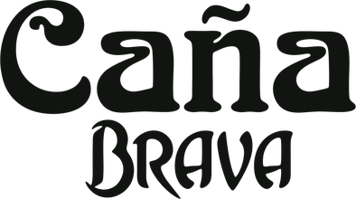

<!DOCTYPE html>
<html lang="es">
<head>
<meta charset="UTF-8">
<meta name="viewport" content="width=device-width, initial-scale=1.0">
<meta name="robots" content="noindex, nofollow">
<title>Planilla | Caña Brava</title>
<link rel="icon" href="assets/img/logo-canabrava.png?v=20260922a">
<link rel="preconnect" href="https://fonts.googleapis.com">
<link rel="preconnect" href="https://fonts.gstatic.com" crossorigin>
<link href="https://fonts.googleapis.com/css2?family=Poppins:wght@400;500;600;700&family=Inter:wght@400;500;600;700&display=swap" rel="stylesheet">
<style>
/* =============================================================
   PLANILLA CAÑA BRAVA
   Siempre en claro. Poppins para rótulos, Inter para cifras.
   Barra lateral de 240px, radio 20/14, sin sombras.
   El verde de la marca aparece en líneas y en el acento.

   REGLA DE SUPERFICIES: un registro lleva tarjeta propia solo si
   cuelga del fondo de la página. Dentro de una tarjeta vuelve a ser
   renglón separado por filete. Nunca caja sobre caja.

   PROHIBIDO: mayúsculas con letter-spacing en cualquier parte.
   ============================================================= */
:root{
	--sans:"Poppins",system-ui,-apple-system,"Segoe UI",sans-serif;
	--datos:"Inter",system-ui,-apple-system,sans-serif;

	--pagina:#eceee9;
	--sup:#ffffff;
	--sup2:#f5f7f3;
	--txt:#141a12;
	--txt2:#4a5544;
	--tenue:#8a9484;
	--linea:rgba(20,26,18,.09);
	--verde:#2E9E5B;
	--verde-t:#24814a;
	--verde-suave:#e8f5ed;
	--verde-marca:#4C8A2E;
	--ctrl:#f2f4f0;

	--ok-bg:#e8f5ed;  --ok-tx:#1c7a46;
	--esp-bg:#fdf3dc; --esp-tx:#8a6d12;
	--mal-bg:#fdeceb; --mal-tx:#b3362f;
	--cb-bg:#e7f0e6; --cb-tx:#2c6b38;
	--pb-bg:#f8efd9; --pb-tx:#8a6510;
	--off-bg:#eeefec; --off-tx:#6b7366;

	--e1:.25rem; --e2:.5rem; --e3:.75rem; --e4:1rem; --e5:1.5rem; --e6:2rem;
	--barra:238px; --radio:18px; --radio-chico:12px;
}
*{box-sizing:border-box}
body{margin:0;background:var(--pagina);color:var(--txt);font-family:var(--sans);font-size:14.5px;line-height:1.5;-webkit-font-smoothing:antialiased}
button,input,select{font:inherit;color:inherit}
button{background:none;border:0;cursor:pointer}
h1,h2,h3{margin:0;font-weight:600;letter-spacing:-.015em}
:focus-visible{outline:2px solid var(--verde);outline-offset:2px;border-radius:6px}

/* El panel entero flota sobre el gris, como una hoja. */
.app{display:flex;min-height:calc(100vh - 24px);margin:12px;background:var(--sup);border-radius:26px;overflow:hidden}

/* ---------- barra lateral ---------- */
.barra{width:var(--barra);flex:0 0 var(--barra);display:flex;flex-direction:column;padding:var(--e5) var(--e3);background:var(--sup)}
/* Las dos marcas, del mismo peso visual. Los logos son negro sobre
   blanco, así que el multiply se come el fondo y quedan sobre el papel
   de la barra sin recuadro. */
.marca{display:grid;grid-template-columns:1fr auto 1fr;align-items:center;gap:.7rem;padding:0 var(--e3) var(--e5)}
.marca img{width:100%;height:30px;object-fit:contain}
.marca .sep{width:1px;height:26px;background:var(--linea)}
.nav{display:flex;flex-direction:column;gap:2px}
.nav button{display:flex;align-items:center;gap:.65rem;width:100%;text-align:left;padding:.56rem var(--e3);border-radius:10px;color:var(--txt2);font-size:.9rem;transition:background .18s,color .18s}
.nav button:hover{background:var(--ctrl);color:var(--txt)}
.nav button[aria-current="page"]{background:var(--verde-suave);color:var(--verde-t);font-weight:600}
.nav svg{width:17px;height:17px;flex:none;stroke:currentColor;fill:none;stroke-width:1.7;stroke-linecap:round;stroke-linejoin:round}
.nav .cuenta{margin-left:auto;font-family:var(--datos);font-size:.76rem;color:var(--tenue);font-weight:500}
.nav button[aria-current="page"] .cuenta{color:var(--verde-t)}
.barra-pie{margin-top:auto;padding:var(--e3);color:var(--tenue);font-size:.73rem}

/* ---------- lienzo ---------- */
.lienzo{flex:1;min-width:0;background:var(--sup2);padding:var(--e5) clamp(1rem,2.4vw,1.9rem) 3rem;border-radius:26px 0 0 26px}
.saludo{display:flex;align-items:flex-start;justify-content:space-between;gap:var(--e4);flex-wrap:wrap;margin-bottom:var(--e5)}
.saludo h1{font-size:1.62rem}
.saludo p{margin:.15rem 0 0;color:var(--tenue);font-size:.88rem}

/* El nombre de la sede es el control: se lee y se toca en el mismo
   lugar, y el panel se descuelga de ahí. */
.sede-sel{position:relative;margin-top:.45rem}
.sede-sel > button{display:inline-flex;align-items:center;gap:.5rem;padding:.4rem .75rem .4rem .62rem;
	border-radius:999px;background:var(--sup2);color:var(--txt);font-size:.93rem;font-weight:500;
	transition:background .18s,color .18s,box-shadow .18s}
.sede-sel > button:hover{box-shadow:inset 0 0 0 1px var(--linea)}
.sede-sel > button svg{width:14px;height:14px;stroke:currentColor;fill:none;stroke-width:2;
	stroke-linecap:round;stroke-linejoin:round;opacity:.65;transition:transform .18s}
.sede-sel > button[aria-expanded="true"] svg{transform:rotate(180deg)}

/* Un tono por marca: verde para Caña Brava, mostaza para Pollo Bravo y
   los dos cuando se ven juntas. Apenas un fondo, nada más. */
.sede-sel > button[data-tono="cb"]{background:var(--cb-bg);color:var(--cb-tx)}
.sede-sel > button[data-tono="pb"]{background:var(--pb-bg);color:var(--pb-tx)}
.sede-sel > button[data-tono="mix"]{background:linear-gradient(100deg,var(--cb-bg) 0%,var(--cb-bg) 42%,var(--pb-bg) 58%,var(--pb-bg) 100%)}
.sede-sel .logos{display:inline-flex;align-items:center;gap:.4rem}
.logo-marca{height:17px;width:auto;object-fit:contain}
.logo-fila{height:14px;width:auto;object-fit:contain}
.panel-sede .sede-marca{display:flex;align-items:center;gap:.45rem}
.panel-sede .sede-marca[data-tono="cb"][aria-pressed="true"]{background:var(--cb-bg);color:var(--cb-tx)}
.panel-sede .sede-marca[data-tono="pb"][aria-pressed="true"]{background:var(--pb-bg);color:var(--pb-tx)}

.panel-sede{position:absolute;top:calc(100% + 6px);left:-.62rem;z-index:40;min-width:244px;
	background:var(--sup);border-radius:16px;padding:6px;
	box-shadow:0 14px 34px rgba(20,26,18,.14);animation:caer .16s ease}
@keyframes caer{from{opacity:0;transform:translateY(-5px)}}
.sede-op{display:block;width:100%;text-align:left;padding:.44rem .7rem;border-radius:10px;
	font-size:.87rem;color:var(--txt2);transition:background .15s,color .15s}
.sede-op:hover{background:var(--ctrl);color:var(--txt)}
.sede-op[aria-pressed="true"]{background:var(--verde-suave);color:var(--verde-t);font-weight:600}
.panel-sede .sede-marca{margin-top:.3rem;font-weight:600;color:var(--txt2)}
.panel-sede .sede-hija{position:relative;padding-left:1.6rem}
.panel-sede .sede-hija::before{content:"";position:absolute;left:.78rem;top:50%;width:5px;height:1px;background:var(--linea)}
.panel-sede .sede-hija[aria-pressed="true"]::before{background:var(--verde)}
.panel-sede .marcable{padding-left:2.1rem}
.panel-sede .marcable::before{content:"";position:absolute;left:.7rem;top:50%;transform:translateY(-50%);
	width:14px;height:14px;border-radius:4px;border:1.5px solid var(--linea);background:var(--sup)}
.panel-sede .marcable{position:relative}
.panel-sede .marcable[aria-pressed="true"]{background:none;color:var(--txt);font-weight:500}
.panel-sede .marcable[aria-pressed="true"]::before{background:var(--verde);border-color:var(--verde)}
.panel-sede .marcable[aria-pressed="true"]::after{content:"";position:absolute;left:1.0rem;top:50%;
	width:4px;height:7px;margin-top:-5px;border:solid #fff;border-width:0 1.8px 1.8px 0;transform:rotate(45deg)}
.sede-pie{display:flex;justify-content:flex-end;padding:.35rem .25rem .1rem;margin-top:.25rem;border-top:1px solid var(--linea)}
.saludo-acc{display:flex;gap:.5rem;align-items:center;flex-wrap:wrap}
.fecha{display:inline-flex;align-items:center;gap:.45rem;height:38px;padding:0 .9rem;border-radius:999px;background:var(--sup);font-size:.85rem;color:var(--txt2)}

/* período */
.periodo{display:flex;align-items:center;gap:var(--e3);flex-wrap:wrap;margin-bottom:var(--e4)}
.mes-sel{display:flex;align-items:center;gap:.25rem;background:var(--sup);border-radius:999px;padding:4px}
.mes-sel b{font-weight:600;font-size:.92rem;min-width:8.6rem;text-align:center}
.flecha{width:30px;height:30px;border-radius:999px;display:grid;place-items:center;font-size:1rem;line-height:1;color:var(--txt2)}
.flecha:hover{background:var(--ctrl)}
.quincenas{display:flex;gap:3px;background:var(--sup);padding:4px;border-radius:999px}
.quincenas button{padding:.4rem .95rem;border-radius:999px;font-size:.85rem;color:var(--txt2);transition:background .18s,color .18s}
.quincenas button[aria-pressed="true"]{background:var(--verde);color:#fff;font-weight:600}
.buscador{margin-left:auto;position:relative}
.buscador input{height:38px;width:clamp(150px,20vw,230px);padding:0 .9rem 0 2.1rem;border:0;border-radius:999px;background:var(--sup);font-size:.86rem;font-family:var(--sans)}
.buscador svg{position:absolute;left:.72rem;top:50%;transform:translateY(-50%);width:15px;height:15px;stroke:var(--tenue);fill:none;stroke-width:1.9}

/* ---------- tarjetas ---------- */
.tarj{background:var(--sup);border-radius:var(--radio);padding:var(--e5)}
.tarj+.tarj{margin-top:var(--e4)}
.tarj-cab{display:flex;align-items:center;justify-content:space-between;gap:var(--e4);flex-wrap:wrap;margin-bottom:var(--e4)}
.tarj-cab h2{font-size:1rem;display:flex;align-items:center;gap:.55rem}
.ico{width:30px;height:30px;border-radius:9px;display:grid;place-items:center;flex:none;background:var(--verde-suave)}
.ico svg{width:16px;height:16px;stroke:var(--verde-t);fill:none;stroke-width:1.8;stroke-linecap:round;stroke-linejoin:round}

.cifras{display:grid;grid-template-columns:repeat(auto-fit,minmax(190px,1fr));gap:var(--e3);margin-bottom:var(--e4)}
.cifra{background:var(--sup);border-radius:var(--radio);padding:var(--e4) var(--e5)}
.cifra .arriba{display:flex;align-items:center;gap:.55rem;margin-bottom:.7rem}
.cifra dt{margin:0;font-size:.86rem;color:var(--txt2);font-weight:500}
.cifra dd{margin:0;font-family:var(--datos);font-size:1.62rem;font-weight:700;font-variant-numeric:tabular-nums;letter-spacing:-.025em}
.cifra small{display:block;margin-top:.3rem;font-size:.78rem;color:var(--tenue);font-weight:400;font-family:var(--sans)}
.delta{display:inline-flex;align-items:center;gap:.2rem;padding:.1rem .45rem;border-radius:999px;font-family:var(--datos);font-size:.73rem;font-weight:600;margin-right:.35rem}
.delta.sube{background:var(--ok-bg);color:var(--ok-tx)}
.delta.baja{background:var(--mal-bg);color:var(--mal-tx)}

/* ---------- gráfico ---------- */
.grafico{display:flex;align-items:flex-end;gap:clamp(4px,1.1vw,12px);height:160px;padding-top:var(--e3)}
.gb{flex:1;display:flex;flex-direction:column;align-items:center;gap:.45rem;min-width:0}
.gb .barra-v{width:100%;max-width:34px;background:var(--verde-suave);border-radius:7px 7px 3px 3px;transition:background .18s}
.gb.hoy .barra-v{background:var(--verde)}
.gb:hover .barra-v{background:#cfe9db}
.gb.hoy:hover .barra-v{background:var(--verde-t)}
.gb span{font-size:.72rem;color:var(--tenue)}
.gb.hoy span{color:var(--verde-t);font-weight:600}

/* ---------- tabla ---------- */
.tabla-env{overflow-x:auto;margin:0 calc(var(--e5) * -1);padding:0 var(--e5)}
table{border-collapse:collapse;width:100%;min-width:600px}
th{font-family:var(--sans);font-size:.8rem;font-weight:500;color:var(--tenue);text-align:left;padding:0 .7rem .6rem;white-space:nowrap}
td{padding:.7rem .7rem;border-top:1px solid var(--linea);vertical-align:middle}
tbody tr{transition:background .15s}
tbody tr:hover td{background:var(--sup2)}
tbody tr.abrible{cursor:pointer}
tbody tr.inactiva td{color:var(--tenue)}
tbody tr.aqui td{background:var(--verde-suave)}
tbody tr.aqui td.nombre{font-weight:600;color:var(--verde-t)}
tbody tr.inactiva td.nombre{font-weight:400}
.fallo{background:var(--mal-bg);color:var(--mal-tx);border-radius:var(--radio);
	padding:.8rem 1rem;margin-bottom:var(--e4);font-size:.86rem}
.pendientes{background:var(--esp-bg);color:var(--esp-tx);border-radius:var(--radio);padding:.8rem 1rem;margin-bottom:var(--e4)}
.pendientes b{display:block;font-size:.86rem;margin-bottom:.25rem}
.pendientes ul{margin:0;padding-left:1.05rem;font-size:.84rem}
.pendientes li{margin:.1rem 0}
.acciones{display:flex;gap:.45rem;flex-wrap:wrap}
.acciones .bt .et{margin-left:.35rem;font-size:.72rem}
.periodo button[disabled]{opacity:.35;cursor:default}
.periodo button[disabled]:hover{background:none;color:var(--txt2)}
.pie-tarj{margin:var(--e3) 0 0;font-size:.82rem;color:var(--tenue)}

.fecha-ctrl{position:relative}
.fecha-bt{display:flex;align-items:center;justify-content:space-between;gap:.5rem;width:100%;height:40px;
	padding:0 .8rem;border-radius:var(--radio-chico);background:var(--sup2);
	font-family:var(--datos);font-size:.9rem;color:var(--txt);text-align:left}
.fecha-bt svg{width:15px;height:15px;flex:none;stroke:var(--tenue);fill:none;stroke-width:1.7;
	stroke-linecap:round;stroke-linejoin:round}
.fecha-bt:hover{box-shadow:inset 0 0 0 1px var(--linea)}
.fecha-bt:focus-visible{outline:2px solid var(--verde);outline-offset:1px}

.calendario{position:absolute;top:calc(100% + 6px);left:0;z-index:70;width:252px;
	background:var(--sup);border-radius:16px;padding:.7rem;
	box-shadow:0 14px 34px rgba(20,26,18,.16);animation:caer .16s ease}
.cal-cab{display:flex;align-items:center;justify-content:space-between;margin-bottom:.4rem}
.cal-cab b{font-size:.9rem}
.cal-cab .flecha{width:26px;height:26px;border-radius:50%;color:var(--txt2);font-size:1.05rem;line-height:1}
.cal-cab .flecha:hover{background:var(--ctrl);color:var(--txt)}
.cal-sem,.cal-dias{display:grid;grid-template-columns:repeat(7,1fr);gap:2px}
.cal-sem span{text-align:center;font-size:.7rem;color:var(--tenue);padding:.2rem 0}
.cal-dias button{height:30px;border-radius:9px;font-family:var(--datos);font-size:.84rem;color:var(--txt2);
	transition:background .14s,color .14s}
.cal-dias button:hover{background:var(--ctrl);color:var(--txt)}
.cal-dias .hoy{color:var(--verde-t);font-weight:700}
.cal-dias .puesto{background:var(--verde);color:#fff;font-weight:600}
.cal-dias .puesto:hover{background:var(--verde);color:#fff}
.cal-pie{display:flex;gap:.35rem;justify-content:flex-end;margin-top:.45rem;padding-top:.45rem;border-top:1px solid var(--linea)}
.bt.peligro{background:var(--mal-bg);color:var(--mal-tx);font-weight:600}
.mini[readonly]{background:none;color:var(--tenue);cursor:default}
.mini[readonly]:focus{outline:none}
.saludo-acc .et{align-self:center}
.valores{display:grid;grid-template-columns:repeat(auto-fit,minmax(165px,1fr));gap:var(--e3) var(--e4)}
.valores dt{font-size:.81rem;color:var(--txt2);margin-bottom:.1rem}
.valores dd{margin:0;font-family:var(--datos);font-size:1.02rem;font-weight:600}
td.nombre small.ausente{color:var(--esp-tx)}
tbody tr.abrible:focus-visible{outline:2px solid var(--verde);outline-offset:-2px}
td.n,th.n{text-align:right}
td.n{font-family:var(--datos);font-variant-numeric:tabular-nums}
.nombre{font-weight:500}
.nombre small{display:block;color:var(--tenue);font-weight:400;font-size:.77rem;font-family:var(--datos)}
tfoot td{border-top:1px solid var(--linea);font-weight:700;font-family:var(--datos)}

/* ---------- controles ---------- */
.bt{display:inline-flex;align-items:center;justify-content:center;gap:.4rem;height:38px;padding:0 1.05rem;border-radius:999px;background:var(--ctrl);color:var(--txt);font-size:.86rem;font-weight:500;transition:background .18s,color .18s,transform .18s}
.bt:hover{background:#e7eae4}
.bt:active{transform:scale(.97)}
.bt.fuerte{background:var(--verde);color:#fff}
.bt.fuerte:hover{background:var(--verde-t)}
.bt.oscuro{background:var(--txt);color:#fff}
.bt.oscuro:hover{background:#2a3327}
.bt.chico{height:30px;padding:0 .8rem;font-size:.8rem}
.bt svg{width:15px;height:15px;stroke:currentColor;fill:none;stroke-width:1.9;stroke-linecap:round;stroke-linejoin:round}

.campo{display:block;margin-bottom:var(--e3)}
.campo span{display:block;margin-bottom:.25rem;font-size:.81rem;color:var(--txt2)}
.campo input,.campo select{width:100%;height:40px;padding:0 .8rem;border-radius:var(--radio-chico);border:0;background:var(--sup2);font-family:var(--datos);font-size:.9rem}
.campo input:focus,.campo select:focus{outline:2px solid var(--verde);outline-offset:1px}
.rejilla{display:grid;grid-template-columns:repeat(auto-fit,minmax(185px,1fr));gap:0 var(--e4)}
.mini{width:80px;height:30px;padding:0 .5rem;border-radius:8px;border:0;background:var(--sup2);font-family:var(--datos);font-size:.85rem;text-align:right}
.mini:focus{outline:2px solid var(--verde);outline-offset:1px}

.et{display:inline-flex;align-items:center;gap:.3rem;padding:.16rem .55rem;border-radius:999px;font-size:.76rem;font-weight:500}
.et::before{content:"";width:5px;height:5px;border-radius:50%;background:currentColor}
.et.ok{background:var(--ok-bg);color:var(--ok-tx)}
.et.esp{background:var(--esp-bg);color:var(--esp-tx)}
.et.off{background:var(--off-bg);color:var(--off-tx)}

.vacio{text-align:center;padding:var(--e6) var(--e4);color:var(--tenue)}
.vacio h3{margin-bottom:.35rem;color:var(--txt2);font-size:1rem}
.vacio p{margin:0 0 var(--e4);font-size:.88rem}

/* ---------- hoja lateral ---------- */
.velo{position:fixed;inset:0;z-index:60;background:rgba(20,26,18,.35);display:none;opacity:0;transition:opacity .2s}
.velo.abierto{display:block;opacity:1}
.hoja{position:fixed;top:12px;right:12px;bottom:12px;width:min(480px,calc(100% - 24px));z-index:61;background:var(--sup);border-radius:22px;padding:var(--e5);overflow-y:auto;transform:translateX(calc(100% + 16px));transition:transform .3s cubic-bezier(.3,.85,.3,1)}
.hoja.abierta{transform:none}
.hoja-cab{display:flex;align-items:center;justify-content:space-between;gap:var(--e3);margin-bottom:var(--e4)}
.hoja-cab h2{font-size:1.12rem}
.hoja-pie{display:flex;gap:var(--e2);margin-top:var(--e5);flex-wrap:wrap}
.hoja h3{font-size:.92rem;margin:var(--e5) 0 var(--e2)}

.boleta{background:var(--sup2);border-radius:var(--radio);padding:var(--e4);font-family:var(--datos);font-size:.87rem}
.boleta .enc{font-family:var(--sans);margin-bottom:var(--e3);padding-bottom:var(--e3);border-bottom:1px solid var(--linea)}
.boleta .enc b{display:block;font-size:.98rem}
.boleta .enc span{display:block;color:var(--tenue);font-size:.81rem}
.boleta .fila{display:flex;justify-content:space-between;gap:1rem;padding:.3rem 0}
.boleta .fila.total{margin-top:.35rem;padding-top:.5rem;border-top:1px solid var(--linea);font-weight:700}
.boleta .resta{color:var(--mal-tx)}
.boleta .bloque{margin-top:.7rem;padding-top:.55rem;border-top:1px solid var(--linea)}
.boleta .bloque b{display:block;font-family:var(--sans);font-size:.82rem;margin-bottom:.15rem}
.boleta .fila.suave{color:var(--tenue);font-size:.84rem}

.pestanas{display:flex;gap:2px;margin-bottom:var(--e4);background:var(--sup2);border-radius:999px;padding:3px}
.pestanas button{flex:1;padding:.42rem .5rem;border-radius:999px;font-size:.84rem;color:var(--txt2);white-space:nowrap}
.pestanas button:hover{color:var(--txt)}
.pestanas button[aria-selected="true"]{background:var(--sup);color:var(--verde-t);font-weight:600}

.aviso{display:flex;gap:.6rem;background:var(--verde-suave);color:var(--verde-t);border-radius:var(--radio-chico);padding:.7rem .9rem;font-size:.84rem;margin-bottom:var(--e4)}


/* ---------- teléfono ---------- */
@media (max-width:860px){
	.app{flex-direction:column;margin:0;border-radius:0;min-height:100vh}
	.barra{position:fixed;left:.6rem;right:.6rem;top:auto;bottom:calc(.5rem + env(safe-area-inset-bottom));width:auto;flex:none;height:auto;flex-direction:row;z-index:30;padding:.3rem;border-radius:999px;box-shadow:0 10px 30px -12px rgba(20,26,18,.3)}
	.marca,.barra-pie{display:none}
	.nav{flex-direction:row;width:100%;gap:0}
	.nav button{flex-direction:column;gap:.1rem;justify-content:center;padding:.4rem .2rem;font-size:.62rem;border-radius:999px}
	.nav .cuenta{display:none}
	.lienzo{padding:var(--e4) var(--e3) 6rem;border-radius:0}
	.tarj{padding:var(--e4)}
	.tabla-env{margin:0 calc(var(--e4) * -1);padding:0 var(--e4)}
	.buscador{margin-left:0;width:100%}
	.buscador input{width:100%}
	.hoja{top:0;right:0;bottom:0;border-radius:22px 0 0 22px;width:min(480px,100%)}
}
@media (prefers-reduced-motion:reduce){*{transition:none!important}}
</style>
</head>
<body>

<div class="app">
	<aside class="barra">
		<div class="marca">
			
			<span class="sep"></span>
			
		</div>
		<nav class="nav" id="nav">
			<button type="button" data-ir="quincena" aria-current="page"><svg viewBox="0 0 24 24"><path d="M3 7h18M3 12h18M3 17h10"/></svg><span>Planilla</span></button>
			<button type="button" data-ir="empleados"><svg viewBox="0 0 24 24"><circle cx="9" cy="8" r="3.2"/><path d="M3 20c0-3.3 2.7-5.5 6-5.5s6 2.2 6 5.5M17 11h4M19 9v4"/></svg><span>Empleados</span><em class="cuenta" id="cuenta-emp"></em></button>
			<button type="button" data-ir="historial"><svg viewBox="0 0 24 24"><circle cx="12" cy="12" r="8.5"/><path d="M12 7v5l3.2 2"/></svg><span>Historial</span></button>
			<button type="button" data-ir="reportes"><svg viewBox="0 0 24 24"><path d="M5 20V9M12 20V4M19 20v-7"/></svg><span>Reportes</span></button>
			<button type="button" data-ir="ajustes"><svg viewBox="0 0 24 24"><path d="M4 7h7m4 0h5M4 17h3m4 0h9"/><circle cx="13" cy="7" r="2.1"/><circle cx="9" cy="17" r="2.1"/></svg><span>Ajustes</span></button>
		</nav>
		<div class="barra-pie" id="barra-pie"></div>
	</aside>

	<main class="lienzo" id="lienzo">
		<div class="fallo" id="fallo" hidden></div>
	</main>
</div>

<div class="velo" id="velo"></div>
<aside class="hoja" id="hoja" role="dialog" aria-modal="true" aria-labelledby="hoja-tit">
	<div class="hoja-cab">
		<h2 id="hoja-tit"></h2>
		<button class="bt chico" type="button" id="hoja-x">Cerrar</button>
	</div>
	<div id="hoja-cuerpo"></div>
</aside>

<script src="https://cdnjs.cloudflare.com/ajax/libs/jspdf/2.5.1/jspdf.umd.min.js"></script>
<script>
(function(){
'use strict';

/* =============================================================
   1. DATOS

   Viven en el servidor. D sigue siendo el mismo objeto en memoria que
   antes —todas las pantallas lo leen igual— pero se llena de una
   llamada al arrancar y cada cambio se manda por su cuenta.

   Nada de guardar() a ciegas: cada acción dice qué cambió, para que un
   adelanto no reescriba la planilla entera.
   ============================================================= */

/* Los tramos de renta son ley, no configuración: viven acá. */
var TRAMOS_RENTA = [
	{ hasta:1347000, pct:10 }, { hasta:2364000, pct:15 },
	{ hasta:4727000, pct:20 }, { hasta:1e15,    pct:25 }
];

var D = { locales:[], empleados:[], periodos:{}, tasas:{ tramos:TRAMOS_RENTA } };
var correoDeQuienEntro = '';
/* Una sola recarga por sesión vencida: si no, un error que se repite
   deja la pantalla recargándose para siempre. */
var reintentoDeSesion = false;

function api(ruta, metodo, cuerpo){
	return fetch('/api/' + ruta, {
		method: metodo || 'GET',
		credentials: 'same-origin',
		headers: { 'content-type': 'application/json' },
		body: cuerpo ? JSON.stringify(cuerpo) : undefined
	}).then(function(r){
		return r.text().then(function(t){
			var j = null;
			try { j = JSON.parse(t); } catch(e){}

			/* Si la sesión venció, Cloudflare contesta con la página de
			   login en vez de JSON. Recargar deja que haga su trabajo,
			   pero solo en ese caso: recargar ante cualquier respuesta
			   rara deja la pantalla en un bucle del que no se sale. */
			var esLogin = r.redirected
				|| r.status === 401 || r.status === 403
				|| (!j && /cloudflareaccess|cdn-cgi\/access/.test(t));
			if (esLogin && !reintentoDeSesion){
				reintentoDeSesion = true;
				location.reload();
				throw new Error('sesion');
			}

			if (!j) throw new Error('El servidor contestó algo que no se entiende (' + r.status + ')');
			if (!r.ok) throw new Error(j.error || ('Error ' + r.status));
			return j;
		});
	});
}

/* Un aviso arriba cuando algo no se pudo guardar. Callar un error en
   una planilla es peor que molestar. */
function avisarFallo(e){
	var caja = $('#fallo');
	if (!caja) return;
	caja.textContent = 'No se pudo guardar: ' + (e && e.message || e) + '. Revisá la conexión y volvé a intentar.';
	caja.hidden = false;
	clearTimeout(avisarFallo._t);
	avisarFallo._t = setTimeout(function(){ caja.hidden = true; }, 8000);
}

/* Manda un cambio y repinta. Si falla, lo dice y recarga para no
   quedarse mostrando algo que el servidor no aceptó. */
function mandar(ruta, metodo, cuerpo, despues){
	return api(ruta, metodo, cuerpo).then(function(r){
		if (despues) despues(r);
		pintar();
		return r;
	}).catch(function(e){
		if (e && e.message === 'sesion') return;
		avisarFallo(e);
		recargarTodo().catch(function(){});
	});
}

function recargarTodo(){
	return api('estado').then(function(j){
		D.locales = j.locales || [];
		D.empleados = j.empleados || [];
		D.periodos = j.periodos || {};
		D.tasas = j.tasas || {};
		D.tasas.tramos = TRAMOS_RENTA;
		correoDeQuienEntro = j.correo || '';
		D.empleados.forEach(function(e){ if (!e.ausencias) e.ausencias = []; });
		pintar();
	});
}


/* =============================================================
   2. EL CÁLCULO
   La CCSS y la renta son mensuales, así que se calculan sobre el mes
   completo y se reparten en mitades. Cada quincena lleva además sus
   propias horas extra y adelantos.
   ============================================================= */
function horaOrdinaria(mensual){ return mensual / 30 / 8; }

function renta(brutoMes, t){
	if (brutoMes <= t.rentaExento) return 0;
	var imp = 0, piso = t.rentaExento;
	for (var i=0;i<t.tramos.length;i++){
		var tr = t.tramos[i];
		if (brutoMes > piso){
			imp += (Math.min(brutoMes, tr.hasta) - piso) * tr.pct / 100;
			piso = tr.hasta;
		}
	}
	return Math.max(0, imp);
}

/* -------------------------------------------------------------
   AUSENCIAS
   Un solo registro para todo el tiempo fuera del puesto. Cada tipo
   dice quién paga esos días:

   Acá solo se calcula lo que le toca pagar a la empresa. Lo que
   depositen la CCSS o el INS va por su cuenta y no entra a la planilla.

   vacaciones  el salario no se toca, solo baja el saldo acumulado
   ccss        se rebajan los días y la empresa paga los primeros tres
               al 50 %. Del cuarto en adelante no debe nada
   ins         riesgo laboral; se rebajan los días y la empresa no pone
               nada, salvo que se configuren días a su cargo
   maternidad  se rebajan los días y la empresa paga la mitad todo el
               período
   singoce     no se paga nada y no acumula derechos

   Los días y los porcentajes viven en Ajustes.
   ------------------------------------------------------------- */
var AUSENCIAS = {
	vacaciones: { et:'Vacaciones',             corto:'Vacaciones',   rebaja:false },
	ccss:       { et:'Incapacidad CCSS',       corto:'Incapacidad',  rebaja:true },
	ins:        { et:'Incapacidad INS',        corto:'Riesgo laboral', rebaja:true },
	maternidad: { et:'Licencia de maternidad', corto:'Maternidad',   rebaja:true },
	singoce:    { et:'Permiso sin goce',       corto:'Permiso sin goce', rebaja:true },
	/* No se registra: lo pone solo el sistema con la fecha de ingreso y
	   la de salida. Por eso no aparece en la lista de tipos. */
	fuera:      { et:'Fuera de planilla',      corto:'fuera de planilla', rebaja:false, oculto:true }
};

function diasNaturales(desde, hasta){
	var d1 = aFecha(desde);
	if (!d1) return 0;
	var d2 = aFecha(hasta) || d1;
	if (d2 < d1) d2 = d1;
	return diasEntre(d1, d2) + 1;
}

function bordesQuincena(periodo, nq){
	var a = periodo.split('-'), y = Number(a[0]), m = Number(a[1]);
	return {
		ini: new Date(y, m-1, nq===1 ? 1 : 16),
		fin: new Date(y, m-1, nq===1 ? 15 : new Date(y, m, 0).getDate())
	};
}

/* Lo que una quincena arrastra de las ausencias: días rebajados del
   salario, lo que pone el patrono y lo que deposita la CCSS o el INS
   por su cuenta. */
function ausenciaEnQuincena(emp, periodo, nq){
	var b = bordesQuincena(periodo, nq);
	var t = D.tasas, diario = salarioDiario(emp);
	var r = { rebajoDias:0, rebajo:0, subsidio:0, lineas:[] };
	var largo = diasEntre(b.ini, b.fin) + 1;

	/* Los días fuera del contrato no se pagan: los de antes de entrar y
	   los de después del último día. */
	var entra = aFecha(emp.fechaIngreso), sale = aFecha(emp.fechaSalida);
	var fuera = 0;
	if (entra && entra > b.ini) fuera += Math.min(diasEntre(b.ini, entra), largo);
	if (sale && sale < b.fin) fuera += Math.min(diasEntre(sale, b.fin), largo);
	fuera = Math.min(fuera, largo);
	if (fuera > 0){
		r.rebajoDias += fuera;
		r.rebajo += fuera * diario;
		r.lineas.push({ tipo:'fuera', dias:fuera, boleta:'', diasPaga:0, pct:0, monto:0,
			desde:emp.fechaIngreso || '', hasta:emp.fechaSalida || '' });
	}

	(emp.ausencias || []).forEach(function(v){
		var reg = AUSENCIAS[v.tipo];
		if (!reg || !reg.rebaja) return;
		var d1 = aFecha(v.desde);
		if (!d1) return;
		var d2 = aFecha(v.hasta) || d1;
		if (d2 < d1) d2 = d1;
		var a1 = d1 > b.ini ? d1 : b.ini;
		var a2 = d2 < b.fin ? d2 : b.fin;
		if (a2 < a1) return;

		var n = diasEntre(a1, a2) + 1;        // días de esta ausencia dentro de la quincena
		var corridos = diasEntre(d1, a1);     // días que ya habían pasado antes de la quincena
		var dPaga = 0, pct = 0;

		/* Los días a cargo de la empresa se cuentan desde que arrancó la
		   incapacidad, no desde que arrancó la quincena: si cruza el 15,
		   no se vuelven a cobrar. */
		if (v.tipo === 'ccss'){
			dPaga = Math.max(0, Math.min(n, (Number(t.incDias)||0) - corridos));
			pct = Number(t.incPct) || 0;
		} else if (v.tipo === 'ins'){
			dPaga = Math.max(0, Math.min(n, (Number(t.insDias)||0) - corridos));
			pct = Number(t.insPct) || 0;
		} else if (v.tipo === 'maternidad'){
			dPaga = n;
			pct = Number(t.matPct) || 0;
		}
		var monto = dPaga * diario * pct / 100;

		r.rebajoDias += n;
		r.rebajo += n * diario;
		r.subsidio += monto;
		r.lineas.push({
			tipo:v.tipo, dias:n, boleta:v.boleta || '',
			diasPaga:dPaga, pct:pct, monto:monto,
			desde:v.desde, hasta:v.hasta || v.desde
		});
	});
	return r;
}

function sinAusencia(){ return { rebajoDias:0, rebajo:0, subsidio:0, lineas:[] }; }

function calcular(emp, aj, periodo){
	var t = D.tasas;
	aj = aj || {};
	var q1 = aj.q1 || {}, q2 = aj.q2 || {};
	var base = Number(emp.salarioMensual) || 0;
	var hora = horaOrdinaria(base);

	function extra(q){ return (Number(q.horasExtra)||0) * hora * 1.5; }

	var extraMes = extra(q1) + extra(q2);

	/* El salario sujeto a cargas es el de la quincena menos los días de
	   ausencia. El subsidio que pone el patrono va aparte: no es salario
	   y por eso no entra a la base de la CCSS ni de la renta. */
	var au1 = periodo ? ausenciaEnQuincena(emp, periodo, 1) : sinAusencia();
	var au2 = periodo ? ausenciaEnQuincena(emp, periodo, 2) : sinAusencia();
	var sal1 = Math.max(0, base/2 - au1.rebajo) + extra(q1);
	var sal2 = Math.max(0, base/2 - au2.rebajo) + extra(q2);
	var brutoMes = sal1 + sal2;

	var sem = brutoMes * t.sem/100, ivm = brutoMes * t.ivm/100, bp = brutoMes * t.bp/100;
	var ccss = sem + ivm + bp;
	var imp = renta(brutoMes, t);
	var dedLey = ccss + imp;

	function quincena(q, salarioQ, au){
		var brutoQ = salarioQ + au.subsidio;
		var dedLeyQ = dedLey/2;
		var adelanto = Number(q.adelanto)||0;
		var otras = Number(q.otras)||0;
		return {
			horas: Number(q.horasExtra)||0, montoExtra: extra(q),
			base: base/2, salario: salarioQ, bruto: brutoQ,
			rebajoDias: au.rebajoDias, rebajo: au.rebajo,
			subsidio: au.subsidio, ausencias: au.lineas,
			sem: sem/2, ivm: ivm/2, bp: bp/2, ccss: ccss/2, renta: imp/2,
			dedLey: dedLeyQ, adelanto: adelanto, otras: otras,
			deducciones: dedLeyQ + adelanto + otras,
			neto: brutoQ - dedLeyQ - adelanto - otras
		};
	}

	var c1 = quincena(q1, sal1, au1), c2 = quincena(q2, sal2, au2);
	return {
		base: base, brutoMes: brutoMes, extraMes: extraMes, ccssMes: ccss, rentaMes: imp,
		netoMes: c1.neto + c2.neto,
		costoPatronal: brutoMes * t.patronal/100,
		q1: c1, q2: c2
	};
}

/* =============================================================
   2b. VACACIONES Y LIQUIDACIÓN

   Se acumula un día entero por cada mes cumplido desde la fecha de
   ingreso. Nunca hay medios días: el mes se cuenta cuando llega la
   fecha, no antes. El día vale el salario mensual entre treinta.

   La cesantía sale de la tabla del artículo 29 del Código de Trabajo:
   los días cambian según el año de antigüedad alcanzado y el tope son
   ocho años. El preaviso sale del artículo 28.
   ============================================================= */
var UNDIA = 86400000;
function aFecha(s){ if (!s) return null; var d = new Date(s + 'T00:00:00'); return isNaN(d) ? null : d; }
function hoyFecha(){ var d = new Date(); return new Date(d.getFullYear(), d.getMonth(), d.getDate()); }
function diasEntre(a, b){ return Math.round((b - a) / UNDIA); }
/* Meses cumplidos: el de ingreso no cuenta hasta que vuelve a caer el
   mismo día del mes. */
function mesesCumplidos(desde, hasta){
	if (!desde || !hasta) return 0;
	var m = (hasta.getFullYear()-desde.getFullYear())*12 + (hasta.getMonth()-desde.getMonth());
	if (hasta.getDate() < desde.getDate()) m -= 1;
	return Math.max(0, m);
}
function salarioDiario(emp){ return (Number(emp.salarioMensual) || 0) / 30; }

function antiguedad(emp, corte){
	var fin = corte || hoyFecha();
	var ing = aFecha(emp.fechaIngreso);
	if (!ing) return { dias:0, meses:0, anios:0, ingreso:null, corte:fin };
	var d = Math.max(0, diasEntre(ing, fin));
	return { dias:d, meses:d/30.4375, anios:d/365.25, ingreso:ing, corte:fin };
}

function vacaciones(emp, corte){
	var fin = corte || hoyFecha();
	var a = antiguedad(emp, fin);
	var porMes = Number(D.tasas.vacDiasMes) || 1;
	var movs = [], futuros = [], sinGoce = 0;
	(emp.ausencias || []).forEach(function(v){
		var d = aFecha(v.desde);
		if (!d || d > fin) {
			if (v.tipo === 'vacaciones' && d) futuros.push(v);
			return;
		}
		if (v.tipo === 'vacaciones') movs.push(v);
		else if (v.tipo === 'singoce') sinGoce += diasNaturales(v.desde, v.hasta);
	});
	function suma(lista){ return lista.reduce(function(t,v){ return t + (Number(v.dias)||0); }, 0); }
	var tomados = suma(movs), programados = suma(futuros);
	/* El permiso sin goce suspende el contrato, así que cada mes entero
	   sin goce no genera día de vacaciones. */
	var mesesSinGoce = Math.floor(sinGoce / 30);
	var meses = Math.max(0, mesesCumplidos(aFecha(emp.fechaIngreso), fin) - mesesSinGoce);
	var ganados = meses * porMes;
	return {
		ganados:ganados, tomados:tomados, programados:programados,
		saldo:ganados - tomados, meses:meses, mesesSinGoce:mesesSinGoce,
		porMes:porMes, valorDia:salarioDiario(emp),
		movimientos:movs, futuros:futuros, antiguedad:a, corte:fin
	};
}

/* Vacaciones que caen dentro de una quincena. Un disfrute se le carga a
   la quincena donde empieza, para que no se cuente dos veces. */
function vacEnQuincena(emp, periodo, q){
	var a = periodo.split('-'), y = Number(a[0]), m = Number(a[1]);
	var ini = new Date(y, m-1, q===1 ? 1 : 16);
	var fin = new Date(y, m-1, q===1 ? 15 : new Date(y, m, 0).getDate());
	var d = 0, textos = [];
	(emp.ausencias || []).forEach(function(v){
		if (v.tipo !== 'vacaciones') return;
		var vd = aFecha(v.desde);
		if (!vd || vd < ini || vd > fin) return;
		d += Number(v.dias) || 0;
		textos.push(fechaCorta(v.desde) + (v.hasta && v.hasta !== v.desde ? ' al ' + fechaCorta(v.hasta) : ''));
	});
	return { dias:d, detalle:textos.join(', '), cierre:fin };
}

var CESANTIA = [0, 19.5, 20, 20.5, 21, 21.24, 21.5, 22, 22, 22, 21.5, 21, 20.5];
function diasCesantia(anios){
	if (anios < 0.25) return 0;
	if (anios < 0.5) return 7;
	if (anios < 1) return 14;
	var ent = Math.floor(anios);
	var tasa = ent >= 13 ? 20 : CESANTIA[ent];
	return tasa * Math.min(ent, 8);
}
function diasPreaviso(anios){
	if (anios < 0.25) return 0;
	if (anios < 0.5) return 7;
	if (anios < 1) return 15;
	return 30;
}

/* El aguinaldo corre del 1 de diciembre al 30 de noviembre y se paga un
   doceavo de lo devengado en ese período. Se cuentan los meses enteros
   y los días que sobran valen un treintavo del salario: dividir todo
   entre treinta inflaría el monto, porque el mes promedia 30,44 días. */
function aguinaldoProporcional(emp, corte){
	var fin = corte || hoyFecha();
	var inicio = new Date(fin.getMonth() >= 11 ? fin.getFullYear() : fin.getFullYear()-1, 11, 1);
	var ing = aFecha(emp.fechaIngreso);
	var desde = (ing && ing > inicio) ? ing : inicio;
	var mensual = Number(emp.salarioMensual) || 0;
	if (fin <= desde) return { monto:0, meses:0, desde:desde };

	var m = (fin.getFullYear()-desde.getFullYear())*12 + (fin.getMonth()-desde.getMonth());
	var tope = new Date(desde.getFullYear(), desde.getMonth()+m, desde.getDate());
	if (tope > fin){ m -= 1; tope = new Date(desde.getFullYear(), desde.getMonth()+m, desde.getDate()); }
	var sueltos = Math.max(0, diasEntre(tope, fin));
	var devengado = mensual * m + (mensual/30) * sueltos;
	return { monto: devengado/12, meses: m + sueltos/30, desde:desde };
}

var MOTIVOS = {
	renuncia: 'Renuncia',
	justa:    'Despido con justa causa',
	sinjusta: 'Despido sin justa causa'
};
function liquidacion(emp, motivo, corte){
	var fin = corte || hoyFecha();
	var a = antiguedad(emp, fin);
	var dia = salarioDiario(emp);
	var v = vacaciones(emp, fin);
	var ag = aguinaldoProporcional(emp, fin);
	var vacDias = Math.max(0, v.saldo);
	var r = {
		motivo:motivo, antiguedad:a, dia:dia, corte:fin,
		aguinaldo:ag.monto, aguinaldoMeses:ag.meses,
		vacDias:vacDias, vacaciones:vacDias * dia,
		preavisoDias:0, preaviso:0, cesantiaDias:0, cesantia:0
	};
	if (motivo === 'sinjusta'){
		r.preavisoDias = diasPreaviso(a.anios);
		r.preaviso = r.preavisoDias * dia;
		r.cesantiaDias = diasCesantia(a.anios);
		r.cesantia = r.cesantiaDias * dia;
	}
	r.total = r.aguinaldo + r.vacaciones + r.preaviso + r.cesantia;
	return r;
}

/* =============================================================
   3. UTILIDADES
   ============================================================= */
var $ = function(s,c){ return (c||document).querySelector(s); };
var col = function(n){ return '₡' + Math.round(n||0).toLocaleString('es-CR'); };
var esc = function(s){ return String(s==null?'':s).replace(/[&<>"]/g,function(c){return {'&':'&amp;','<':'&lt;','>':'&gt;','"':'&quot;'}[c];}); };
function plural(n, uno, varios){ return n + ' ' + (n === 1 ? uno : varios); }
function textoRegla(tipo){
	var t = D.tasas;
	if (tipo === 'vacaciones') return 'El salario no cambia. Solo baja el saldo.';
	if (tipo === 'ccss') return 'La empresa paga '+plural(t.incDias,'día','días')+' al '+t.incPct+' %. El resto lo cubre la Caja.';
	if (tipo === 'ins') return Number(t.insDias)
		? 'La empresa paga '+plural(t.insDias,'día','días')+' al '+t.insPct+' %. El resto lo cubre el INS.'
		: 'Lo cubre el INS. La empresa no paga nada.';
	if (tipo === 'maternidad') return 'La empresa paga el '+t.matPct+' % de cada día.';
	return 'Sin pago. Ese tiempo no acumula vacaciones.';
}
/* Cómo se reparte cada ausencia, para que la boleta lo diga sin que
   nadie tenga que acordarse de la regla. */
function detalleAusencia(l){
	var reg = AUSENCIAS[l.tipo] || {};
	var partes = [plural(l.dias,'día','días')
		+ (l.tipo === 'fuera' ? ' ' : ' de ') + reg.corto.toLowerCase()];
	if (l.boleta) partes.push('boleta ' + l.boleta);
	return partes.join(', ');
}
function resumenAusencias(q){
	var por = {};
	(q.ausencias||[]).forEach(function(l){ por[l.tipo] = (por[l.tipo]||0) + l.dias; });
	return Object.keys(por).map(function(k){
		return plural(por[k],'día','días')
			+ (k === 'fuera' ? ' ' : ' de ') + AUSENCIAS[k].corto.toLowerCase();
	}).join(' | ');
}
function nDias(n){ return (Math.round((n||0)*10)/10).toLocaleString('es-CR',{maximumFractionDigits:1}); }
function fechaCorta(s){
	var d = aFecha(s);
	if (!d) return '—';
	return d.getDate() + ' ' + MESES[d.getMonth()].slice(0,3) + ' ' + d.getFullYear();
}
function textoAntiguedad(a){
	if (!a.ingreso) return 'sin fecha de ingreso';
	var anios = Math.floor(a.anios), meses = Math.round((a.anios - anios) * 12);
	if (meses === 12){ anios += 1; meses = 0; }
	if (!anios) return plural(meses, 'mes', 'meses');
	return plural(anios, 'año', 'años') + (meses ? ' y ' + plural(meses, 'mes', 'meses') : '');
}
var MESES = ['enero','febrero','marzo','abril','mayo','junio','julio','agosto','setiembre','octubre','noviembre','diciembre'];
/* El nombre de la sede es el selector. Lo que se lee arriba es lo mismo
   que se toca para cambiarlo, así no hacen falta dos menús que se
   parecen y hacen cosas distintas. */
function cabecera(titulo, derecha, sinSede){
	return '<div class="saludo"><div><h1>'+titulo+'</h1>'
		+ (sinSede ? '' : selectorSede())+'</div>'
		+ (derecha ? '<div class="saludo-acc">'+derecha+'</div>' : '')
		+ '</div>';
}

function marcasEnVista(){
	var g = [];
	idsEnVista().forEach(function(id){
		var l = localDe(id);
		if (l.grupo && g.indexOf(l.grupo) === -1) g.push(l.grupo);
	});
	return g;
}
function claveMarca(g){
	var t = (g || '').toLowerCase();
	if (t.indexOf('ca\u00f1a') === 0 || t.indexOf('cana') === 0) return 'cb';
	if (t.indexOf('pollo') === 0) return 'pb';
	return '';
}
function logoMarca(g, clase){
	var k = claveMarca(g);
	if (!k) return '';
	return '';
}

function selectorSede(){
	var ms = marcasEnVista();
	var tono = ms.length === 1 ? claveMarca(ms[0]) : (ms.length > 1 ? 'mix' : '');
	var logos = ms.map(function(g){ return logoMarca(g); }).join('');
	return '<div class="sede-sel">'
		+ '<button type="button" id="abrir-sedes" data-tono="'+tono+'" aria-expanded="'+(!!estado.abrirSedes)+'">'
		+ (logos ? '<span class="logos">'+logos+'</span>' : '')
		+ '<span class="nombre">'+tituloVista()+'</span>'
		+ '<svg viewBox="0 0 24 24"><path d="M6 9l6 6 6-6"/></svg></button>'
		+ (estado.abrirSedes ? panelSedes() : '')
		+ '</div>';
}
function cifra(icono, et, valor, pie){
	return '<div class="cifra"><div class="arriba">'+ico(icono)+'<dt>'+et+'</dt></div>'
		+ '<dd>'+valor+'</dd><small>'+pie+'</small></div>';
}
function deltaHtml(ahora, antes){
	if (!antes) return '';
	var pct = ((ahora - antes) / antes) * 100;
	if (!isFinite(pct) || Math.abs(pct) < 0.05) return '';
	var sube = pct > 0;
	return '<span class="delta '+(sube?'sube':'baja')+'">'+(sube?'↑':'↓')+' '+Math.abs(pct).toFixed(1)+' %</span>';
}
function ico(d){ return '<span class="ico"><svg viewBox="0 0 24 24">'+d+'</svg></span>'; }
var I = {
	billete:'<rect x="2.5" y="6" width="19" height="12" rx="2.5"/><circle cx="12" cy="12" r="2.6"/>',
	resta:'<path d="M5 12h14"/><circle cx="12" cy="12" r="9"/>',
	empresa:'<path d="M3 21h18M5 21V7l7-4 7 4v14M10 21v-5h4v5"/>',
	gente:'<circle cx="9" cy="8" r="3"/><path d="M3 20c0-3.1 2.7-5.2 6-5.2s6 2.1 6 5.2M17 11h4M19 9v4"/>',
	grafico:'<path d="M5 20V9M12 20V4M19 20v-7"/>',
	lista:'<path d="M4 7h16M4 12h16M4 17h10"/>'
};
function nombreMes(p){ var a=p.split('-'); return MESES[Number(a[1])-1] + ' de ' + a[0]; }
function diasQuincena(p,q){
	var a=p.split('-'), m=Number(a[1]), y=Number(a[0]);
	var fin = new Date(y, m, 0).getDate();
	return q===1 ? ('1 al 15 de '+MESES[m-1]) : ('16 al '+fin+' de '+MESES[m-1]);
}

var hoy = new Date();
var estado = {
	pantalla:'quincena',
	local: D.locales[0] ? D.locales[0].id : null,
	periodo: hoy.getFullYear()+'-'+String(hoy.getMonth()+1).padStart(2,'0'),
	q: hoy.getDate() <= 15 ? 1 : 2,
	buscar: '', editando: null, sel: [], abrirSedes: false
};

function coincide(e){
	var t = (estado.buscar||'').trim().toLowerCase();
	if (!t) return true;
	return (e.nombre+' '+(e.cedula||'')+' '+(e.puesto||'')).toLowerCase().indexOf(t) !== -1;
}
/* Quién estaba en planilla en una quincena. Sin fecha de salida, un
   empleado inactivo desaparece de todos lados y eso cambiaría quincenas
   ya cerradas; con la fecha, sigue apareciendo hasta el día que se fue. */
function trabajabaEn(e, periodo, q){
	if (!periodo) return e.activo !== false;
	var b = bordesQuincena(periodo, q);
	var entra = aFecha(e.fechaIngreso);
	if (entra && entra > b.fin) return false;
	var sale = aFecha(e.fechaSalida);
	if (sale) return sale >= b.ini;
	return e.activo !== false;
}
function empleadosEnQuincena(lid, periodo, q){
	return D.empleados.filter(function(e){
		return e.localId === lid && trabajabaEn(e, periodo, q);
	});
}
function nombreLocal(l){
	if (!l) return '—';
	return l.nombre || ((l.grupo?l.grupo+' ':'') + (l.sede||'')).trim() || '—';
}
function localDe(id){ return D.locales.find(function(l){ return l.id===id; }) || {}; }

/* El panel siempre mira un recorte: todas las sedes, un restaurante
   completo (sus dos sedes) o una sola sede. Todo lo demas lee de aqui
   y no vuelve a preguntar. estado.local guarda '_todos', 'g:<marca>'
   o el id de un local. */
function marcas(){
	var g = [];
	D.locales.filter(function(l){ return l.activo!==false; }).forEach(function(l){
		if (l.grupo && g.indexOf(l.grupo) === -1) g.push(l.grupo);
	});
	return g;
}
function vistaMarca(){ return String(estado.local).indexOf('g:')===0 ? String(estado.local).slice(2) : null; }
function eligiendo(){ return estado.local === '_sel'; }
function unaSedeSola(){ return estado.local !== '_todos' && !eligiendo() && !vistaMarca(); }
function idsEnVista(){
	var act = D.locales.filter(function(l){ return l.activo!==false; });
	var m = vistaMarca();
	if (eligiendo()) act = act.filter(function(l){ return estado.sel.indexOf(l.id) !== -1; });
	else if (m) act = act.filter(function(l){ return l.grupo === m; });
	else if (estado.local !== '_todos') act = act.filter(function(l){ return l.id === estado.local; });
	return act.map(function(l){ return l.id; });
}
function tituloVista(){
	if (eligiendo()){
		var ids = idsEnVista();
		if (!ids.length) return 'Ninguna sede elegida';
		if (ids.length <= 3) return ids.map(function(id){ return esc(nombreLocal(localDe(id))); }).join(' | ');
		return plural(ids.length, 'sede elegida', 'sedes elegidas');
	}
	var m = vistaMarca();
	if (m){ var k = idsEnVista().length; return esc(m) + (k===1 ? '' : ' | las ' + k + ' sedes'); }
	if (estado.local === '_todos') return 'Todas las sedes';
	return esc(nombreLocal(localDe(estado.local)));
}
function pieSedes(){
	if (unaSedeSola()) return 'en esta sede';
	var k = idsEnVista().length;
	return 'en ' + k + (k===1 ? ' sede' : ' sedes');
}
function empleadosEnVista(){
	var ids = idsEnVista();
	return D.empleados.filter(function(e){ return ids.indexOf(e.localId) !== -1; });
}
/* per() crea el registro del período: solo se llama cuando de verdad
   hay algo que guardar. Para dibujar se usa perLeer() y ajusteLeer(),
   que devuelven lo que haya o un vacío de paso, sin tocar los datos.
   Antes bastaba con asomarse a un mes para que quedara escrito. */
var VACIO = { ajustes:{}, enviado:{} };
var AJUSTE_VACIO = { q1:{}, q2:{} };

function perLeer(p,l){
	return (D.periodos[p] && D.periodos[p][l]) || VACIO;
}
function ajusteLeer(p,l,empId){
	var pp = perLeer(p,l);
	var a = pp.ajustes && pp.ajustes[empId];
	if (!a) return AJUSTE_VACIO;
	return { q1: a.q1 || {}, q2: a.q2 || {} };
}
function per(p,l){
	D.periodos[p] = D.periodos[p] || {};
	D.periodos[p][l] = D.periodos[p][l] || { ajustes:{}, enviado:{} };
	return D.periodos[p][l];
}
function ajusteDe(p,l,empId){
	var pp = per(p,l);
	pp.ajustes[empId] = pp.ajustes[empId] || { q1:{}, q2:{} };
	if (!pp.ajustes[empId].q1) pp.ajustes[empId].q1 = {};
	if (!pp.ajustes[empId].q2) pp.ajustes[empId].q2 = {};
	return pp.ajustes[empId];
}

/* -------------------------------------------------------------
   HASTA DÓNDE SE PUEDE LLEGAR

   La quincena 1 se habilita el día 1 y la 2 el día 15. Más allá de eso
   no hay nada que hacer: el panel guarda lo que pasó, no adelanta meses
   que todavía no llegaron.
   ------------------------------------------------------------- */
function mesDeHoy(){
	var d = hoyFecha();
	return d.getFullYear() + '-' + String(d.getMonth()+1).padStart(2,'0');
}
function quincenaHabilitada(periodo, q){
	var tope = mesDeHoy();
	if (periodo < tope) return true;
	if (periodo > tope) return false;
	return q === 1 ? true : hoyFecha().getDate() >= 15;
}
function periodoHabilitado(periodo){ return periodo <= mesDeHoy(); }

/* -------------------------------------------------------------
   EL ESTADO DE UNA QUINCENA

   Una quincena está abierta mientras se le puedan tocar los montos, y
   cerrada cuando ya se generaron las boletas y se pagó. Cerrada no se
   edita: hay que reabrirla a propósito, y todo lo que se cambie después
   queda anotado en la bitácora del período.

   El cierre se guarda por local, así que si se está viendo más de una
   sede la quincena solo cuenta como cerrada cuando lo están todas.
   ------------------------------------------------------------- */
function cierreDe(periodo, lid, q){
	var pp = D.periodos[periodo] && D.periodos[periodo][lid];
	return (pp && pp.enviado && pp.enviado['q'+q]) || null;
}
function estadoQuincena(periodo, q, ids){
	ids = ids || idsEnVista();
	if (!ids.length) return { estado:'vacia', fecha:null, cerradas:0, total:0 };
	var fechas = ids.map(function(lid){ return cierreDe(periodo, lid, q); });
	var cerradas = fechas.filter(Boolean);
	if (!cerradas.length) return { estado:'abierta', fecha:null, cerradas:0, total:ids.length };
	if (cerradas.length < ids.length) return { estado:'parcial', fecha:cerradas.sort()[0], cerradas:cerradas.length, total:ids.length };
	return { estado:'cerrada', fecha:cerradas.sort().pop(), cerradas:cerradas.length, total:ids.length };
}
function etiquetaEstado(e){
	if (e.estado === 'cerrada') return '<span class="et ok">Cerrada el '+fechaCortaDe(e.fecha)+'</span>';
	if (e.estado === 'parcial') return '<span class="et esp">Cerrada en '+e.cerradas+' de '+e.total+'</span>';
	if (e.estado === 'vacia') return '';
	return '<span class="et esp">Abierta</span>';
}
function fechaCortaDe(iso){
	if (!iso) return '—';
	var d = new Date(iso);
	return d.getDate() + ' ' + MESES[d.getMonth()].slice(0,3);
}
function anotar(periodo, lid, texto){
	var pp = per(periodo, lid);
	pp.bitacora = pp.bitacora || [];
	pp.bitacora.push({ cuando: new Date().toISOString(), que: texto });
}

/* =============================================================
   4. PANTALLAS
   ============================================================= */
function barraPeriodo(){
	var haySiguiente = estado.periodo < mesDeHoy();
	var q2 = quincenaHabilitada(estado.periodo, 2);
	return '<div class="periodo">'
		+ '<div class="mes-sel">'
		+ '<button class="flecha" type="button" id="mes-ant" aria-label="Mes anterior">‹</button>'
		+ '<b>'+nombreMes(estado.periodo)+'</b>'
		+ '<button class="flecha" type="button" id="mes-sig" aria-label="Mes siguiente"'
		+ (haySiguiente ? '' : ' disabled')+'>›</button>'
		+ '</div>'
		+ '<div class="quincenas">'
		+ '<button type="button" data-q="1" aria-pressed="'+(estado.q===1)+'">Quincena 1</button>'
		+ '<button type="button" data-q="2" aria-pressed="'+(estado.q===2)+'"'
		+ (q2 ? '' : ' disabled title="Se abre el 15"')+'>Quincena 2</button>'
		+ '<button type="button" data-q="mes" aria-pressed="'+(estado.q==='mes')+'">Mes</button>'
		+ '</div>'
		+ '<div class="buscador"><svg viewBox="0 0 24 24"><circle cx="11" cy="11" r="7"/><path d="M20 20l-3.5-3.5"/></svg>'
		+ '<input type="search" id="buscar" placeholder="Buscar empleado" value="'+esc(estado.buscar||'')+'"></div>'
		+ '</div>';
}

/* El local es el contexto de todo el panel, no un filtro de pantalla:
   por eso vive en la barra lateral y no se repite arriba de cada una.
   Va agrupado por marca, que es como está armado el negocio, y así
   escala si mañana abren otro. */
/* El panel que se descuelga del nombre de la sede. Un solo lugar para
   elegir: todas, un restaurante completo, una sede, o varias sueltas. */
function panelSedes(){
	var activos = D.locales.filter(function(l){ return l.activo!==false; });
	var elige = eligiendo();

	var html = '<button class="sede-op" type="button" data-local="_todos"'
		+ ' aria-pressed="'+(estado.local==='_todos')+'">Todas las sedes</button>';

	var grupos = [];
	activos.forEach(function(l){
		var g = l.grupo || null, ex = null;
		for (var i=0;i<grupos.length;i++){ if (grupos[i].g === g) ex = grupos[i]; }
		if (ex) ex.items.push(l); else grupos.push({ g:g, items:[l] });
	});

	grupos.forEach(function(gr){
		if (gr.g){
			var marcada = elige
				? gr.items.length && gr.items.every(function(l){ return estado.sel.indexOf(l.id) !== -1; })
				: estado.local === 'g:'+gr.g;
			html += '<button class="sede-op sede-marca'+(elige?' marcable':'')+'" type="button"'
				+ ' data-tono="'+claveMarca(gr.g)+'"'
				+ (elige ? ' data-sel-grupo="'+esc(gr.g)+'"' : ' data-local="g:'+esc(gr.g)+'"')
				+ ' aria-pressed="'+!!marcada+'">'
				+ logoMarca(gr.g, 'logo-fila') + '<span>'+esc(gr.g)+'</span></button>';
		}
		html += gr.items.map(function(l){
			var et = gr.g ? (l.sede || nombreLocal(l)) : nombreLocal(l);
			var on = elige ? estado.sel.indexOf(l.id) !== -1 : estado.local === l.id;
			return '<button type="button" class="sede-op '+(gr.g?'sede-hija':'')+(elige?' marcable':'')+'"'
				+ (elige ? ' data-sel-local="'+l.id+'"' : ' data-local="'+l.id+'"')
				+ ' aria-pressed="'+on+'">'+esc(et)+'</button>';
		}).join('');
	});

	html += '<div class="sede-pie">'
		+ (elige
			? '<button class="bt chico fuerte" type="button" id="sede-listo">Listo</button>'
			: '<button class="bt chico" type="button" id="sede-elegir">Elegir varias</button>')
		+ '</div>';

	return '<div class="panel-sede">'+html+'</div>';
}

function netoQuincenaAnterior(){
	if (estado.q === 'mes') return 0;
	var p = estado.periodo, q = estado.q - 1;
	if (q < 1){
		var a = p.split('-'), d = new Date(Number(a[0]), Number(a[1])-2, 1);
		p = d.getFullYear()+'-'+String(d.getMonth()+1).padStart(2,'0');
		q = 2;
	}
	var locales = idsEnVista();
	var t = 0;
	locales.forEach(function(lid){
		var pp = D.periodos[p] && D.periodos[p][lid];
		if (!pp) return;
		empleadosEnQuincena(lid, p, q).forEach(function(e){
			var c = calcular(e, ajusteLeer(p, lid, e.id), p);
			t += q===1 ? c.q1.neto : c.q2.neto;
		});
	});
	return t;
}

/* La vista del mes suma las dos quincenas. Es de consulta: cerrar,
   reabrir y las boletas siguen siendo cosa de cada quincena. */
function pantallaMes(){
	var locales = idsEnVista();
	var filas='', tBruto=0, tDed=0, tNeto=0, tPat=0, n=0;
	locales.forEach(function(lid){
		D.empleados.filter(function(e){
			return e.localId === lid && coincide(e)
				&& (trabajabaEn(e, estado.periodo, 1) || trabajabaEn(e, estado.periodo, 2));
		}).forEach(function(e){
			var c = calcular(e, ajusteLeer(estado.periodo, lid, e.id), estado.periodo);
			var bruto = c.q1.bruto + c.q2.bruto;
			var ded = c.q1.deducciones + c.q2.deducciones;
			var neto = c.q1.neto + c.q2.neto;
			var horas = c.q1.horas + c.q2.horas;
			var adel = c.q1.adelanto + c.q2.adelanto;
			tBruto += bruto; tDed += ded; tNeto += neto; tPat += c.costoPatronal; n++;
			filas += '<tr>'
				+ '<td class="nombre">'+esc(e.nombre)+'<small>'+esc(e.cedula||'sin cédula')
				+ (unaSedeSola() ? '' : ' | '+esc(nombreLocal(localDe(lid))))+'</small></td>'
				+ '<td class="n">'+col(e.salarioMensual)+'</td>'
				+ '<td class="n">'+(horas ? nDias(horas)+' h' : '—')+'</td>'
				+ '<td class="n">'+(adel ? col(adel) : '—')+'</td>'
				+ '<td class="n">'+col(bruto)+'</td>'
				+ '<td class="n">−'+col(ded)+'</td>'
				+ '<td class="n"><strong>'+col(neto)+'</strong></td></tr>';
		});
	});

	var cuerpo = n
		? '<div class="tabla-env"><table><thead><tr><th>Empleado</th><th class="n">Salario</th>'
			+ '<th class="n">Horas extra</th><th class="n">Adelantos</th><th class="n">Bruto</th>'
			+ '<th class="n">Deducciones</th><th class="n">Neto</th></tr></thead>'
			+ '<tbody>'+filas+'</tbody>'
			+ '<tfoot><tr><td>'+plural(n,'empleado','empleados')+'</td><td></td><td></td><td></td>'
			+ '<td class="n">'+col(tBruto)+'</td><td class="n">−'+col(tDed)+'</td>'
			+ '<td class="n">'+col(tNeto)+'</td></tr></tfoot></table></div>'
		: '<div class="vacio"><h3>Todavía no hay empleados aquí</h3></div>';

	var e1 = estadoQuincena(estado.periodo, 1, locales);
	var e2 = estadoQuincena(estado.periodo, 2, locales);
	var hayQ2 = quincenaHabilitada(estado.periodo, 2);
	var hoyTxt = new Date().toLocaleDateString('es-CR',{weekday:'long',day:'numeric',month:'long',year:'numeric'});

	return cabecera('Planilla de '+nombreMes(estado.periodo).split(' de ')[0],
			'<span class="fecha">'+hoyTxt.charAt(0).toUpperCase()+hoyTxt.slice(1)+'</span>')
		+ barraPeriodo()
		+ '<dl class="cifras">'
		+ cifra(I.billete,'Planilla del mes',col(tNeto),'las dos quincenas')
		+ cifra(I.resta,'Deducciones',col(tDed),'')
		+ cifra(I.empresa,'Costo para la empresa',col(tBruto+tPat),'bruto + '+D.tasas.patronal+' % patronal')
		+ cifra(I.gente,'Empleados',String(n), pieSedes())
		+ '</dl>'
		+ '<section class="tarj"><div class="tarj-cab"><h2>'+ico(I.lista)+'Resumen del mes</h2>'
		+ '<div class="acciones">'
		+ '<button class="bt" type="button" data-q="1">Quincena 1 '+etiquetaEstado(e1)+'</button>'
		+ (hayQ2 ? '<button class="bt" type="button" data-q="2">Quincena 2 '+etiquetaEstado(e2)+'</button>'
			: '<span class="et off">Quincena 2 abre el 15</span>')
		+ '</div></div>'+cuerpo+'</section>'
		+ bitacoraDelPeriodo(locales);
}

function pantallaQuincena(){
	if (estado.q === 'mes') return pantallaMes();
	var locales = idsEnVista();
	var est = estadoQuincena(estado.periodo, estado.q, locales);
	var bloqueo = est.estado === 'cerrada' ? ' readonly' : '';
	var faltan = [];

	var filas='', tBruto=0, tDed=0, tNeto=0, tPat=0, n=0;
	locales.forEach(function(lid){
		empleadosEnQuincena(lid, estado.periodo, estado.q).filter(coincide).forEach(function(e){
			var c = calcular(e, ajusteLeer(estado.periodo, lid, e.id), estado.periodo);
			var q = estado.q===1 ? c.q1 : c.q2;
			tBruto+=q.bruto; tDed+=q.deducciones; tNeto+=q.neto; tPat+=c.costoPatronal/2; n++;
			filas += '<tr data-emp="'+e.id+'" data-local="'+lid+'">'
				+ '<td class="nombre">'+esc(e.nombre)+'<small>'+esc(e.cedula||'sin cédula')
				+ (unaSedeSola() ? '' : ' | '+esc(nombreLocal(localDe(lid))))+'</small>'
				+ (q.rebajoDias ? '<small class="ausente">'+resumenAusencias(q)+'</small>' : '')+'</td>'
				+ '<td class="n">'+col(q.base)+'</td>'
				+ '<td class="n"><input class="mini" type="number" min="0" step="0.5" data-campo="horasExtra" value="'+(q.horas||'')+'" placeholder="0"'+bloqueo+' aria-label="Horas extra de '+esc(e.nombre)+'"></td>'
				+ '<td class="n"><input class="mini" type="number" min="0" step="1000" data-campo="adelanto" value="'+(q.adelanto||'')+'" placeholder="0"'+bloqueo+' aria-label="Adelanto de '+esc(e.nombre)+'"></td>'
				+ '<td class="n">'+col(q.bruto)+'</td>'
				+ '<td class="n">−'+col(q.deducciones)+'</td>'
				+ '<td class="n"><strong>'+col(q.neto)+'</strong></td>'
				+ '<td><button class="bt chico" type="button" data-boleta="'+e.id+'" data-l="'+lid+'">Boleta</button></td>'
				+ '</tr>';
		});
	});

	var sinSalario = [], sinCuenta = [], sinCorreo = [];
	locales.forEach(function(lid){
		empleadosEnQuincena(lid, estado.periodo, estado.q).forEach(function(e){
			if (!Number(e.salarioMensual)) sinSalario.push(e.nombre);
			if (!e.cuenta) sinCuenta.push(e.nombre);
			if (!e.correo) sinCorreo.push(e.nombre);
		});
	});
	function pega(lista){ return lista.slice(0,3).join(', ') + (lista.length > 3 ? ' y '+(lista.length-3)+' más' : ''); }
	if (sinSalario.length) faltan.push('Sin salario cargado: '+pega(sinSalario));
	if (sinCuenta.length) faltan.push('Sin cuenta para el depósito: '+pega(sinCuenta));
	if (sinCorreo.length) faltan.push('Sin correo para la boleta: '+pega(sinCorreo));

	var cuerpo = n
		? '<div class="tabla-env"><table><thead><tr><th>Empleado</th><th class="n">Salario</th>'
			+ '<th class="n">Horas extra</th><th class="n">Adelanto</th><th class="n">Bruto</th>'
			+ '<th class="n">Deducciones</th><th class="n">Neto</th><th></th></tr></thead>'
			+ '<tbody>'+filas+'</tbody>'
			+ '<tfoot><tr><td>'+plural(n,'empleado','empleados')+'</td><td></td><td></td><td></td>'
			+ '<td class="n">'+col(tBruto)+'</td><td class="n">−'+col(tDed)+'</td>'
			+ '<td class="n">'+col(tNeto)+'</td><td></td></tr></tfoot></table></div>'
		: '<div class="vacio"><h3>Todavía no hay empleados aquí</h3>'
			+ '<button class="bt fuerte" type="button" data-ir="empleados">Agregar el primero</button></div>';

	/* Lo que falta para poder pagar. Solo aparece si hay algo que
	   arreglar, y solo mientras la quincena siga abierta. */
	var avisoFaltan = (!bloqueo && faltan.length)
		? '<div class="pendientes"><b>'+plural(faltan.length,'cosa por revisar','cosas por revisar')+'</b>'
			+ '<ul>'+faltan.map(function(f){ return '<li>'+f+'</li>'; }).join('')+'</ul></div>'
		: '';

	var accion = !n ? ''
		: est.estado === 'cerrada'
			? '<button class="bt" type="button" id="reabrir">Reabrir para corregir</button>'
				+ '<button class="bt fuerte" type="button" id="bajar-otra-vez">Descargar boletas</button>'
			: '<button class="bt" type="button" id="depositos">Lista de depósitos</button>'
				+ '<button class="bt fuerte" type="button" id="enviar-todas">Cerrar quincena</button>';

	var hoyTxt = new Date().toLocaleDateString('es-CR',{weekday:'long',day:'numeric',month:'long',year:'numeric'});
	return cabecera('Planilla de '+nombreMes(estado.periodo).split(' de ')[0],
			etiquetaEstado(est) + '<span class="fecha">'+hoyTxt.charAt(0).toUpperCase()+hoyTxt.slice(1)+'</span>')
		+ barraPeriodo()
		+ avisoFaltan
		+ '<dl class="cifras">'
		+ cifra(I.billete,'Planilla a Pagar',col(tNeto), deltaHtml(tNeto, netoQuincenaAnterior()) + diasQuincena(estado.periodo, estado.q))
		+ cifra(I.resta,'Deducciones',col(tDed),'')
		+ cifra(I.empresa,'Costo para la empresa',col(tBruto+tPat),'bruto + '+D.tasas.patronal+' % patronal')
		+ cifra(I.gente,'Empleados',String(n), pieSedes())
		+ '</dl>'
		+ '<section class="tarj"><div class="tarj-cab"><h2>'+ico(I.lista)+'Detalle</h2>'
		+ '<div class="acciones">'+accion+'</div></div>'+cuerpo
		+ (bloqueo ? '<p class="pie-tarj">Esta quincena ya se cerró. Para cambiar un monto hay que reabrirla.</p>' : '')
		+ '</section>'
		+ bitacoraDelPeriodo(locales);
}

/* Todo lo que se tocó después de un cierre queda acá. Es el respaldo de
   por qué un monto no es el que se pagó. */
function bitacoraDelPeriodo(locales){
	var filas = [];
	locales.forEach(function(lid){
		var pp = D.periodos[estado.periodo] && D.periodos[estado.periodo][lid];
		(pp && pp.bitacora || []).forEach(function(b){
			filas.push({ cuando:b.cuando, que:b.que, local:lid });
		});
	});
	if (!filas.length) return '';
	filas.sort(function(a,b){ return a.cuando < b.cuando ? 1 : -1; });
	return '<section class="tarj"><div class="tarj-cab"><h2>Bitácora</h2></div>'
		+ '<div class="tabla-env"><table><thead><tr><th>Cuándo</th><th>Qué pasó</th>'
		+ (locales.length > 1 ? '<th>Sede</th>' : '')+'</tr></thead><tbody>'
		+ filas.map(function(f){
			var d = new Date(f.cuando);
			return '<tr><td class="nombre">'+fechaCortaDe(f.cuando)
				+ '<small>'+d.toLocaleTimeString('es-CR',{hour:'2-digit',minute:'2-digit'})+'</small></td>'
				+ '<td>'+esc(f.que)+'</td>'
				+ (locales.length > 1 ? '<td>'+esc(nombreLocal(localDe(f.local)))+'</td>' : '')+'</tr>';
		}).join('')
		+ '</tbody></table></div></section>';
}

function pantallaEmpleados(){
	/* Los inactivos van al final y en gris: siguen estando, pero no
	   estorban la lectura de los que trabajan hoy. */
	var lista = empleadosEnVista().slice().sort(function(a,b){
		var aa = a.activo===false ? 1 : 0, ab = b.activo===false ? 1 : 0;
		if (aa !== ab) return aa - ab;
		return a.nombre.toLowerCase() < b.nombre.toLowerCase() ? -1 : 1;
	});
	var filas = lista.map(function(e){
		return '<tr class="abrible'+(e.activo===false?' inactiva':'')+'" tabindex="0" data-abrir="'+e.id+'">'
			+ '<td class="nombre">'+esc(e.nombre)+'<small>'+esc(e.cedula||'sin cédula')
			+ (e.activo===false && e.fechaSalida ? ' | salió el '+fechaCorta(e.fechaSalida) : '')+'</small></td>'
			+ '<td>'+esc(e.puesto||'—')+'</td>'
			+ '<td>'+esc(nombreLocal(localDe(e.localId)))+'</td>'
			+ '<td class="n">'+col(e.salarioMensual)+'</td>'
			+ '<td class="n">'+nDias(vacaciones(e).saldo)+'</td>'
			+ '<td>'+esc(e.correo||'—')+'</td>'
			+ '<td>'+(e.activo===false?'<span class="et off">Inactivo</span>':'<span class="et ok">Activo</span>')+'</td></tr>';
	}).join('');

	return cabecera('Empleados')
		+ '<section class="tarj"><div class="tarj-cab"><h2>'+plural(lista.length,'empleado','empleados')+'</h2>'
		+ '<button class="bt fuerte" type="button" id="nuevo-emp">Agregar empleado</button></div>'
		+ (lista.length
			? '<div class="tabla-env"><table><thead><tr><th>Empleado</th><th>Puesto</th><th>Local</th>'
				+ '<th class="n">Salario</th><th class="n">Vacaciones</th><th>Correo</th><th>Estado</th></tr></thead><tbody>'+filas+'</tbody></table></div>'
			: '<div class="vacio"><h3>Sin empleados</h3></div>')
		+ '</section>';
}

/* El libro de meses: una fila por quincena, con su estado y su total.
   Es donde se contesta "¿ya cerramos octubre?" sin abrir nada. */
function pantallaHistorial(){
	var locales = idsEnVista();

	/* Los meses que ya tienen movimiento, más el que se está viendo, para
	   que el mes en curso aparezca aunque todavía no se haya tocado. */
	/* Solo los meses que de verdad tienen algo guardado, más el que se
	   está viviendo. El resto son cuentas que nadie hizo. */
	var meses = Object.keys(D.periodos).filter(function(pe){
		return periodoHabilitado(pe) && locales.some(function(lid){ return D.periodos[pe][lid]; });
	});
	if (meses.indexOf(mesDeHoy()) === -1) meses.push(mesDeHoy());
	meses = meses.sort().reverse();

	var filas = meses.map(function(pe){
		return [1,2].map(function(q){
			if (!quincenaHabilitada(pe, q)) return '';
			var est = estadoQuincena(pe, q, locales);
			var tot = 0, movida = false;
			locales.forEach(function(lid){
				var pp = perLeer(pe, lid);
				var fijo = pp.pagado && pp.pagado['q'+q];
				if (fijo) tot += fijo.total;
				else empleadosEnQuincena(lid, pe, q).forEach(function(e){
					var c = calcular(e, ajusteLeer(pe, lid, e.id), pe);
					tot += q===1 ? c.q1.neto : c.q2.neto;
				});
				if (pp && pp.ajustes) movida = movida || Object.keys(pp.ajustes).some(function(k){
					var a = pp.ajustes[k] && pp.ajustes[k]['q'+q];
					return a && (a.horasExtra || a.adelanto || a.otras);
				});
			});
			/* Una quincena pasada solo es historia si se cerró o si alguien
			   le escribió algo. La del mes en curso siempre se muestra,
			   porque es la que se está armando. */
			var cerrada = est.estado === 'cerrada' || est.estado === 'parcial';
			var enCurso = pe === mesDeHoy();
			if (!cerrada && !movida && !enCurso) return '';
			var actual = pe === estado.periodo && q === estado.q;
			if (estado.q === 'mes' && pe === estado.periodo) actual = false;
			return '<tr class="abrible'+(actual?' aqui':'')+'" tabindex="0" data-periodo="'+pe+'|'+q+'">'
				+ '<td class="nombre">'+nombreMes(pe)+'<small>quincena '+q+' | '+diasQuincena(pe,q)+'</small></td>'
				+ '<td class="n">'+col(tot)+'</td>'
				+ '<td>'+(etiquetaEstado(est) || '<span class="et off">Sin movimiento</span>')+'</td></tr>';
		}).join('');
	}).join('');

	return cabecera('Historial')
		+ '<section class="tarj">'
		+ (filas ? '<div class="tabla-env"><table><thead><tr><th>Período</th><th class="n">Neto pagado</th>'
			+ '<th>Estado</th></tr></thead><tbody>'+filas+'</tbody></table></div>'
			+ '<p class="pie-tarj">Tocá una quincena para abrirla.</p>'
			: '<div class="vacio"><h3>Todavía no hay quincenas con movimiento</h3></div>')
		+ '</section>';
}

function pantallaReportes(){
	var dentro = idsEnVista();
	var filas = D.locales.filter(function(l){ return dentro.indexOf(l.id) !== -1; }).map(function(l){
		var emps = D.empleados.filter(function(e){
			return e.localId === l.id
				&& (trabajabaEn(e, estado.periodo, 1) || trabajabaEn(e, estado.periodo, 2));
		});
		var b=0,d=0,nt=0,pat=0;
		emps.forEach(function(e){
			var c = calcular(e, ajusteLeer(estado.periodo, l.id, e.id), estado.periodo);
			b+=c.brutoMes; d+=c.ccssMes+c.rentaMes; nt+=c.netoMes; pat+=c.costoPatronal;
		});
		return '<tr><td class="nombre">'+esc(nombreLocal(l))+'<small>'+plural(emps.length,'empleado','empleados')+'</small></td>'
			+ '<td class="n">'+col(b)+'</td><td class="n">'+col(d)+'</td><td class="n">'+col(nt)+'</td>'
			+ '<td class="n">'+col(pat)+'</td><td class="n"><strong>'+col(b+pat)+'</strong></td></tr>';
	}).join('');

	return cabecera('Reportes de '+nombreMes(estado.periodo).split(' de ')[0])
		+ barraPeriodo().replace('<div class="quincenas">','<div class="quincenas" hidden>')
		+ '<section class="tarj"><div class="tarj-cab"><h2>'+ico(I.empresa)+'Costo mensual por local</h2></div>'
		+ '<div class="tabla-env"><table><thead><tr><th>Local</th><th class="n">Bruto</th><th class="n">Deducciones</th>'
		+ '<th class="n">Neto</th><th class="n">Patronal</th><th class="n">Costo total</th></tr></thead>'
		+ '<tbody>'+filas+'</tbody></table></div></section>'
		+ tarjetaSicere(dentro);
}

/* Lo que la CCSS pide por empleado cuando se llena la planilla del mes
   en la Oficina Virtual: identificación, días laborados y el salario
   reportado. Las ausencias que no se pagan bajan los días; las
   vacaciones no, porque son tiempo pagado. */
function lineasSicere(periodo, ids){
	var filas = [];
	ids.forEach(function(lid){
		D.empleados.filter(function(e){
			return e.localId === lid && (trabajabaEn(e, periodo, 1) || trabajabaEn(e, periodo, 2));
		}).forEach(function(e){
			var c = calcular(e, ajusteLeer(periodo, lid, e.id), periodo);
			var a1 = ausenciaEnQuincena(e, periodo, 1), a2 = ausenciaEnQuincena(e, periodo, 2);
			var porTipo = {};
			a1.lineas.concat(a2.lineas).forEach(function(l){ porTipo[l.tipo] = (porTipo[l.tipo]||0) + l.dias; });
			/* Los días laborados salen del contrato dentro del mes, con el
			   tope de 30 que usa la Caja, menos las ausencias que no se
			   pagan. Los días fuera de planilla ya están en ese tramo. */
			var aa = periodo.split('-'), y = Number(aa[0]), m = Number(aa[1]);
			var diasMes = new Date(y, m, 0).getDate();
			var mIni = new Date(y, m-1, 1), mFin = new Date(y, m-1, diasMes);
			var entra = aFecha(e.fechaIngreso), sale = aFecha(e.fechaSalida);
			var desde = (entra && entra > mIni) ? entra : mIni;
			var hasta = (sale && sale < mFin) ? sale : mFin;
			var tramo = hasta < desde ? 0 : Math.min(30, diasEntre(desde, hasta) + 1);
			var ausentes = (porTipo.ccss||0) + (porTipo.ins||0) + (porTipo.maternidad||0) + (porTipo.singoce||0);
			filas.push({
				emp:e, local:localDe(lid),
				dias: Math.max(0, tramo - ausentes),
				salario: c.brutoMes,
				inc: (porTipo.ccss||0) + (porTipo.ins||0),
				mat: porTipo.maternidad||0,
				sinGoce: porTipo.singoce||0
			});
		});
	});
	return filas.sort(function(a,b){ return a.emp.nombre.toLowerCase() < b.emp.nombre.toLowerCase() ? -1 : 1; });
}

function tarjetaSicere(ids){
	var filas = lineasSicere(estado.periodo, ids);
	if (!filas.length){
		return '<section class="tarj"><div class="tarj-cab"><h2>Resumen para SICERE</h2></div>'
			+ '<div class="vacio"><h3>Sin empleados en esta vista</h3></div></section>';
	}
	var t = D.tasas;
	var totSal = filas.reduce(function(x,f){ return x + f.salario; }, 0);
	var obrera = totSal * (t.sem + t.ivm + t.bp) / 100;
	var patronal = totSal * t.patronal / 100;
	var varias = ids.length > 1;

	return '<section class="tarj"><div class="tarj-cab"><h2>Resumen para SICERE</h2>'
		+ '<button class="bt" type="button" id="csv-sicere">Descargar CSV</button></div>'
		+ '<div class="tabla-env"><table><thead><tr><th>Empleado</th><th>Cédula</th>'
		+ (varias ? '<th>Sede</th>' : '')
		+ '<th class="n">Días</th><th class="n">Salario del mes</th>'
		+ '<th class="n">Incap.</th><th class="n">Matern.</th><th class="n">Sin goce</th></tr></thead><tbody>'
		+ filas.map(function(f){
			return '<tr><td class="nombre">'+esc(f.emp.nombre)+'</td>'
				+ '<td>'+(f.emp.cedula ? esc(f.emp.cedula) : '<span class="et esp">falta</span>')+'</td>'
				+ (varias ? '<td>'+esc(nombreLocal(f.local))+'</td>' : '')
				+ '<td class="n">'+f.dias+'</td>'
				+ '<td class="n">'+col(f.salario)+'</td>'
				+ '<td class="n">'+(f.inc||'—')+'</td>'
				+ '<td class="n">'+(f.mat||'—')+'</td>'
				+ '<td class="n">'+(f.sinGoce||'—')+'</td></tr>';
		}).join('')
		+ '</tbody><tfoot><tr><td>'+plural(filas.length,'empleado','empleados')+'</td><td></td>'
		+ (varias ? '<td></td>' : '')
		+ '<td></td><td class="n">'+col(totSal)+'</td><td></td><td></td><td></td></tr></tfoot></table></div>'
		+ '<dl class="valores" style="margin-top:var(--e4)">'
		+ '<div><dt>Salarios del mes</dt><dd>'+col(totSal)+'</dd></div>'
		+ '<div><dt>Cuota obrera '+pct(t.sem+t.ivm+t.bp)+'</dt><dd>'+col(obrera)+'</dd></div>'
		+ '<div><dt>Cuota patronal '+pct(t.patronal)+'</dt><dd>'+col(patronal)+'</dd></div>'
		+ '<div><dt>Total a la Caja</dt><dd>'+col(obrera+patronal)+'</dd></div>'
		+ '</dl>'
		+ '</section>';
}

/* Los valores se ven, no se tocan. Hay que entrar a editar a propósito
   para cambiarlos: así nadie corre una tasa de la planilla sin querer. */
function pct(v){ return (Number(v)||0).toLocaleString('es-CR',{maximumFractionDigits:2}) + ' %'; }

var VALORES = {
	tasas: {
		titulo: 'Cargas y deducciones',
		campos: [
			['sem','CCSS'], ['ivm','IVM'], ['bp','Banco Popular'], ['patronal','Carga patronal'],
			['rentaExento','Renta exenta'], ['vacDiasMes','Vacaciones por mes']
		],
		lectura: function(t){
			return [
				['CCSS', pct(t.sem)], ['IVM', pct(t.ivm)],
				['Banco Popular', pct(t.bp)], ['Carga patronal', pct(t.patronal)],
				['Renta exenta', col(t.rentaExento)],
				['Vacaciones por mes', plural(Number(t.vacDiasMes)||0,'día','días')]
			];
		}
	},
	ausencias: {
		titulo: 'Costo para la empresa',
		campos: [
			['incDias','CCSS, días'], ['incPct','CCSS, %'],
			['insDias','INS, días'], ['insPct','INS, %'],
			['matPct','Maternidad, %']
		],
		lectura: function(t){
			function tramo(dias, p){
				return Number(dias) ? plural(Number(dias),'día','días') + ' al ' + pct(p) : 'nada';
			}
			return [
				['Incapacidad CCSS', tramo(t.incDias, t.incPct)],
				['Incapacidad INS', tramo(t.insDias, t.insPct)],
				['Maternidad', pct(t.matPct) + ' de cada día']
			];
		}
	}
};

function tarjetaValores(clave){
	var g = VALORES[clave], t = D.tasas;
	var editando = estado.editando === clave;
	var cuerpo = editando
		? '<div class="rejilla">'
			+ g.campos.map(function(c){
				return '<label class="campo"><span>'+c[1]+'</span>'
					+ '<input type="number" step="0.01" data-tasa="'+c[0]+'" value="'+t[c[0]]+'"></label>';
			}).join('')
			+ '</div>'
			+ '<div class="hoja-pie"><button class="bt fuerte" type="button" data-guardar-val="'+clave+'">Guardar</button>'
			+ '<button class="bt" type="button" data-cancelar-val="1">Cancelar</button></div>'
		: '<dl class="valores">'
			+ g.lectura(t).map(function(r){
				return '<div><dt>'+r[0]+'</dt><dd>'+r[1]+'</dd></div>';
			}).join('')
			+ '</dl>';

	return '<section class="tarj"><div class="tarj-cab"><h2>'+g.titulo+'</h2>'
		+ (editando ? '' : '<button class="bt" type="button" data-editar-val="'+clave+'">Editar</button>')
		+ '</div>'+cuerpo+'</section>';
}

function pantallaAjustes(){
	/* Activos primero y ordenados por restaurante, para que la tabla se
	   lea igual que el selector de la izquierda. */
	var orden = D.locales.slice().sort(function(a,b){
		var aa = a.activo===false ? 1 : 0, ab = b.activo===false ? 1 : 0;
		if (aa !== ab) return aa - ab;
		var ga = (a.grupo||a.nombre||'').toLowerCase(), gb = (b.grupo||b.nombre||'').toLowerCase();
		if (ga !== gb) return ga < gb ? -1 : 1;
		return (a.sede||'').toLowerCase() < (b.sede||'').toLowerCase() ? -1 : 1;
	});
	var locales = orden.map(function(l){
		var off = l.activo === false;
		return '<tr'+(off?' class="inactiva"':'')+'><td class="nombre">'+esc(l.grupo || l.nombre || '—')+'</td>'
			+ '<td>'+esc(l.sede || '—')+'</td>'
			+ '<td>'+(off?'<span class="et off">Inactivo</span>':'<span class="et ok">Activo</span>')+'</td>'
			+ '<td class="n">'+D.empleados.filter(function(e){return e.localId===l.id;}).length+'</td>'
			+ '<td><button class="bt chico" type="button" data-ren="'+l.id+'">Editar</button> '
			+ '<button class="bt chico" type="button" data-local-toggle="'+l.id+'">'+(off?'Activar':'Desactivar')+'</button></td></tr>';
	}).join('');

	return cabecera('Ajustes', '', true)
		+ '<section class="tarj"><div class="tarj-cab"><h2>Locales</h2>'
		+ '<button class="bt" type="button" id="nuevo-local">Agregar local</button></div>'
		+ '<div class="tabla-env"><table><thead><tr><th>Restaurante</th><th>Sede</th><th>Estado</th>'
		+ '<th class="n">Empleados</th><th></th></tr></thead>'
		+ '<tbody>'+locales+'</tbody></table></div></section>'

		+ tarjetaValores('tasas')
		+ tarjetaValores('ausencias')

		+ '<section class="tarj"><div class="tarj-cab"><h2>Respaldo</h2></div>'
		+ '<div style="display:flex;gap:.5rem;flex-wrap:wrap">'
		+ '<button class="bt" type="button" id="exportar">Descargar copia</button>'
		+ '<button class="bt" type="button" id="importar">Restaurar copia</button></div></section>';
}

/* =============================================================
   4b. CALENDARIO
   Un campo de fecha propio en vez del del navegador, que cambia de cara
   según el sistema y no se puede vestir. Guarda el valor en un input
   escondido, así el resto del código sigue leyendo .value como siempre.
   ============================================================= */
var DIASEM = ['L','M','M','J','V','S','D'];

function campoFecha(id, etiqueta, valor, attr){
	return '<label class="campo" id="campo-'+id+'"'+(attr||'')+'><span>'+etiqueta+'</span>'
		+ '<div class="fecha-ctrl">'
		+ '<input type="hidden" id="'+id+'" value="'+esc(valor||'')+'">'
		+ '<button type="button" class="fecha-bt" data-cal="'+id+'">'
		+ '<span>'+(valor ? fechaLarga(valor) : 'Elegir fecha')+'</span>'
		+ '<svg viewBox="0 0 24 24"><rect x="3.5" y="5" width="17" height="15.5" rx="3"/>'
		+ '<path d="M3.5 10h17M8 3v4M16 3v4"/></svg></button>'
		+ '</div></label>';
}

function fechaLarga(iso){
	var d = aFecha(iso);
	if (!d) return 'Elegir fecha';
	return d.getDate() + ' de ' + MESES[d.getMonth()] + ' de ' + d.getFullYear();
}
function isoDe(d){
	return d.getFullYear() + '-' + String(d.getMonth()+1).padStart(2,'0') + '-' + String(d.getDate()).padStart(2,'0');
}

function cerrarCalendario(){
	var v = document.querySelector('.calendario');
	if (v) v.parentNode.removeChild(v);
}

function abrirCalendario(id, boton){
	cerrarCalendario();
	var input = document.getElementById(id);
	var elegido = aFecha(input.value);
	var vista = elegido ? new Date(elegido.getFullYear(), elegido.getMonth(), 1)
		: new Date(hoyFecha().getFullYear(), hoyFecha().getMonth(), 1);

	var caja = document.createElement('div');
	caja.className = 'calendario';
	boton.parentNode.appendChild(caja);

	function pintarCal(){
		var y = vista.getFullYear(), m = vista.getMonth();
		var primero = new Date(y, m, 1);
		/* La semana arranca el lunes, como el calendario de pared. */
		var hueco = (primero.getDay() + 6) % 7;
		var largo = new Date(y, m+1, 0).getDate();
		var hoy = hoyFecha();

		var celdas = '';
		for (var i = 0; i < hueco; i++) celdas += '<span></span>';
		for (var d = 1; d <= largo; d++){
			var f = new Date(y, m, d);
			var clases = [];
			if (elegido && f.getTime() === elegido.getTime()) clases.push('puesto');
			if (f.getTime() === hoy.getTime()) clases.push('hoy');
			celdas += '<button type="button" class="'+clases.join(' ')+'" data-dia="'+isoDe(f)+'">'+d+'</button>';
		}

		caja.innerHTML = '<div class="cal-cab">'
			+ '<button type="button" class="flecha" data-mes="-1" aria-label="Mes anterior">‹</button>'
			+ '<b>'+MESES[m].charAt(0).toUpperCase()+MESES[m].slice(1)+' '+y+'</b>'
			+ '<button type="button" class="flecha" data-mes="1" aria-label="Mes siguiente">›</button></div>'
			+ '<div class="cal-sem">'+DIASEM.map(function(x){ return '<span>'+x+'</span>'; }).join('')+'</div>'
			+ '<div class="cal-dias">'+celdas+'</div>'
			+ '<div class="cal-pie"><button type="button" class="bt chico" data-dia="'+isoDe(hoy)+'">Hoy</button>'
			+ (input.value ? '<button type="button" class="bt chico" data-dia="">Borrar</button>' : '')+'</div>';
	}

	caja.onclick = function(ev){
		var b = ev.target.closest('button');
		if (!b) return;
		ev.stopPropagation();
		if (b.dataset.mes){
			vista = new Date(vista.getFullYear(), vista.getMonth() + Number(b.dataset.mes), 1);
			pintarCal();
			return;
		}
		if (b.dataset.dia != null){
			input.value = b.dataset.dia;
			boton.querySelector('span').textContent = b.dataset.dia ? fechaLarga(b.dataset.dia) : 'Elegir fecha';
			input.dispatchEvent(new Event('input', { bubbles:true }));
			input.dispatchEvent(new Event('change', { bubbles:true }));
			cerrarCalendario();
		}
	};

	pintarCal();

	/* Si se sale por la derecha de la hoja, se cuelga del otro lado. */
	var limite = (boton.closest('.hoja') || document.body).getBoundingClientRect();
	if (caja.getBoundingClientRect().right > limite.right - 8){
		caja.style.left = 'auto';
		caja.style.right = '0';
	}
}

/* =============================================================
   5. HOJA LATERAL
   ============================================================= */
function abrirHoja(t,h){ $('#hoja-tit').textContent=t; $('#hoja-cuerpo').innerHTML=h; $('#hoja').classList.add('abierta'); $('#velo').classList.add('abierto'); }
function cerrarHoja(){ $('#hoja').classList.remove('abierta'); $('#velo').classList.remove('abierto'); }

/* El local se guarda partido en dos: el restaurante (la marca) y la
   sede. Asi el selector de la izquierda puede agrupar solo, y sumar
   una sede nueva a un restaurante que ya existe no cuesta nada. */
function fichaLocal(id){
	var l = id ? D.locales.find(function(x){return x.id===id;}) : null;
	var nuevo = !l;
	l = l || { id:'l'+Date.now(), grupo:'', sede:'', activo:true };

	var sug = marcas().map(function(g){ return '<option value="'+esc(g)+'"></option>'; }).join('');

	abrirHoja(nuevo ? 'Nuevo local' : nombreLocal(l),
		'<div class="rejilla">'
		+ '<label class="campo"><span>Restaurante</span>'
		+ '<input id="l-grupo" list="marcas-sug" value="'+esc(l.grupo || l.nombre || '')+'" placeholder="Caña Brava"></label>'
		+ '<datalist id="marcas-sug">'+sug+'</datalist>'
		+ '<label class="campo"><span>Sede</span>'
		+ '<input id="l-sede" value="'+esc(l.sede||'')+'" placeholder="Guápiles"></label>'
		+ '<label class="campo"><span>Estado</span><select id="l-activo">'
		+ '<option value="1"'+(l.activo!==false?' selected':'')+'>Activo</option>'
		+ '<option value="0"'+(l.activo===false?' selected':'')+'>Inactivo</option></select></label>'
		+ '</div>'
		+ '<div class="hoja-pie"><button class="bt fuerte" type="button" id="l-guardar">Guardar</button>'
		+ '<button class="bt" type="button" id="l-cancelar">Cancelar</button></div>');

	$('#l-cancelar').onclick = cerrarHoja;
	$('#l-guardar').onclick = function(){
		var g = $('#l-grupo').value.trim(), sd = $('#l-sede').value.trim();
		if (!g){ $('#l-grupo').focus(); return; }
		l.grupo = g; l.sede = sd; l.activo = $('#l-activo').value==='1';
		delete l.nombre;
		if (nuevo) D.locales.push(l);
		cerrarHoja();
		mandar('local', 'PUT', l);
	};
}

var pestanaFicha = 'datos';

function fichaEmpleado(id){
	var e = id ? D.empleados.find(function(x){return x.id===id;}) : null;
	var nuevo = !e;
	e = e || { id:'e'+Date.now(), localId: unaSedeSola()?estado.local:(idsEnVista()[0]||D.locales[0].id),
		nombre:'', cedula:'', correo:'', puesto:'', fechaIngreso:'', salarioMensual:0, cuenta:'', activo:true };
	if (nuevo) pestanaFicha = 'datos';
	if (estado.liqEmp !== e.id){ estado.liqEmp = e.id; estado.liqMotivo = null; estado.liqFecha = null; }
	if (!e.ausencias) e.ausencias = [];

	var ops = D.locales.map(function(l){ return '<option value="'+l.id+'"'+(l.id===e.localId?' selected':'')+'>'+esc(nombreLocal(l))+'</option>'; }).join('');

	/* ---------- pestaña: datos ---------- */
	var panelDatos = '<div class="rejilla">'
		+ '<label class="campo"><span>Nombre completo</span><input id="f-nombre" value="'+esc(e.nombre)+'"></label>'
		+ '<label class="campo"><span>Cédula</span><input id="f-cedula" value="'+esc(e.cedula)+'" placeholder="1-2345-6789"></label>'
		+ '<label class="campo"><span>Correo</span><input id="f-correo" type="email" value="'+esc(e.correo)+'"></label>'
		+ '<label class="campo"><span>Puesto</span><input id="f-puesto" value="'+esc(e.puesto)+'"></label>'
		+ '<label class="campo"><span>Local</span><select id="f-local">'+ops+'</select></label>'
		+ campoFecha('f-ingreso','Fecha de ingreso', e.fechaIngreso)
		+ '<label class="campo"><span>Salario mensual</span><input id="f-salario" type="number" step="1000" value="'+(e.salarioMensual||'')+'"></label>'
		+ '<label class="campo"><span>Cuenta o SINPE</span><input id="f-cuenta" value="'+esc(e.cuenta)+'"></label>'
		+ '<label class="campo"><span>Estado</span><select id="f-activo">'
		+ '<option value="1"'+(e.activo!==false?' selected':'')+'>Activo</option>'
		+ '<option value="0"'+(e.activo===false?' selected':'')+'>Inactivo</option></select></label>'
		+ campoFecha('f-salida','Último día', e.fechaSalida, e.activo===false ? '' : ' hidden')
		+ '</div>'
		+ '<div class="hoja-pie"><button class="bt fuerte" type="button" id="f-guardar">Guardar</button>'
		+ '<button class="bt" type="button" id="f-cancelar">Cancelar</button></div>';

	/* ---------- pestaña: ausencias ----------
	   Vacaciones, incapacidades y permisos viven en la misma lista: son
	   todos tiempo fuera del puesto y la quincena los lee de un solo
	   lugar. Arriba va el saldo de vacaciones, que es lo único que se
	   acumula. */
	var v = vacaciones(e);
	var movs = e.ausencias.slice().sort(function(a,b){ return a.desde < b.desde ? 1 : -1; }).map(function(m){
		var reg = AUSENCIAS[m.tipo] || AUSENCIAS.vacaciones;
		var futura = aFecha(m.desde) > hoyFecha();
		var cuantos = m.tipo === 'vacaciones' ? Number(m.dias)||0 : diasNaturales(m.desde, m.hasta);
		return '<tr><td class="nombre">'+esc(reg.et)
			+ '<small>'+fechaCorta(m.desde)
			+ (m.hasta && m.hasta !== m.desde ? ' al '+fechaCorta(m.hasta) : '')+'</small>'
			+ (m.boleta ? '<small>Boleta '+esc(m.boleta)+'</small>' : '')
			+ (m.nota ? '<small>'+esc(m.nota)+'</small>' : '')+'</td>'
			+ '<td class="n">'+nDias(cuantos)+'</td>'
			+ '<td>'+(futura ? '<span class="et esp">Programada</span>' : '<span class="et ok">Registrada</span>')+'</td>'
			+ '<td><button class="bt chico" type="button" data-vacx="'+m.id+'">Quitar</button></td></tr>';
	}).join('');

	var tipoSel = e._tipoAus || 'vacaciones';
	var pideBoleta = tipoSel === 'ccss' || tipoSel === 'ins';

	var panelVac = '<div class="boleta">'
		+ '<div class="enc"><b>'+textoAntiguedad(v.antiguedad)+' en la empresa</b>'
		+ '<span>'+(e.fechaIngreso ? 'Ingresó el '+fechaCorta(e.fechaIngreso) : 'Falta la fecha de ingreso')+'</span>'
		+ '<span>'+plural(v.meses,'mes cumplido','meses cumplidos')+'</span></div>'
		+ '<div class="fila"><span>Vacaciones acumuladas</span><span>'+nDias(v.ganados)+' días</span></div>'
		+ '<div class="fila"><span>Disfrutadas</span><span class="resta">−'+nDias(v.tomados)+' días</span></div>'
		+ (v.programados ? '<div class="fila suave"><span>Programadas, todavía sin disfrutar</span>'
			+ '<span>'+nDias(v.programados)+' días</span></div>' : '')
		+ (v.mesesSinGoce ? '<div class="fila suave"><span>Meses sin goce que no acumulan</span>'
			+ '<span>'+v.mesesSinGoce+'</span></div>' : '')
		+ '<div class="fila total"><span>Saldo</span><span>'+nDias(v.saldo)+' días</span></div>'
		+ '</div>'
		+ '<h3>Registrar una ausencia</h3>'
		+ '<div class="rejilla">'
		+ '<label class="campo"><span>Tipo</span><select id="v-tipo">'
		+ Object.keys(AUSENCIAS).filter(function(k){ return !AUSENCIAS[k].oculto; }).map(function(k){
			return '<option value="'+k+'"'+(k===tipoSel?' selected':'')+'>'+AUSENCIAS[k].et+'</option>';
		}).join('')
		+ '</select></label>'
		+ campoFecha('v-desde','Desde','')
		+ campoFecha('v-hasta','Hasta','')
		+ '<label class="campo"><span>Días</span><input id="v-dias" type="number" step="1" min="1"'
		+ (tipoSel === 'vacaciones' ? '' : ' readonly')+'></label>'
		+ (pideBoleta ? '<label class="campo"><span>Boleta</span><input id="v-boleta" placeholder="Número"></label>' : '')
		+ '<label class="campo"><span>Nota</span><input id="v-nota" placeholder="Opcional"></label>'
		+ '</div>'
		+ '<p style="margin:var(--e2) 0 0;font-size:.82rem;color:var(--tenue)">'+textoRegla(tipoSel)+'</p>'
		+ '<div class="hoja-pie"><button class="bt fuerte" type="button" id="v-agregar">Agregar</button></div>'
		+ (movs ? '<h3>Registro</h3><div class="tabla-env" style="margin:0;padding:0">'
			+ '<table style="min-width:0"><thead><tr><th>Tipo</th><th class="n">Días</th><th>Estado</th><th></th></tr></thead>'
			+ '<tbody>'+movs+'</tbody></table></div>' : '');

	/* ---------- pestaña: pagos ---------- */
	/* Un pago existe cuando la quincena se cerró. Antes bastaba con que
	   el mes estuviera guardado para listar las dos quincenas con el
	   monto proyectado, aunque nadie hubiera pagado nada. */
	var hist = '';
	Object.keys(D.periodos).sort().reverse().forEach(function(pe){
		var pp = perLeer(pe, e.localId);
		[1,2].forEach(function(q){
			var env = pp.enviado && pp.enviado['q'+q];
			if (!env) return;
			var fijo = pp.pagado && pp.pagado['q'+q] && pp.pagado['q'+q].empleados;
			var monto;
			if (fijo && fijo[e.id] != null) monto = fijo[e.id];
			else {
				if (!trabajabaEn(e, pe, q)) return;
				var c = calcular(e, ajusteLeer(pe, e.localId, e.id), pe);
				monto = (q===1 ? c.q1 : c.q2).neto;
			}
			if (!monto) return;
			hist += '<tr><td class="nombre">'+nombreMes(pe)+'<small>quincena '+q+'</small></td>'
				+ '<td class="n">'+col(monto)+'</td>'
				+ '<td><span class="et ok">Pagada el '+fechaCortaDe(env)+'</span></td>'
				+ '<td><button class="bt chico" type="button" data-pdf-hist="'+pe+'|'+q+'|'+e.id+'|'+e.localId+'">PDF</button></td></tr>';
		});
	});
	var panelPagos = hist
		? '<div class="tabla-env" style="margin:0;padding:0">'
			+ '<table style="min-width:0"><thead><tr><th>Período</th><th class="n">Neto</th><th>Boleta</th><th></th></tr></thead>'
			+ '<tbody>'+hist+'</tbody></table></div>'
		: '<div class="vacio"><h3>Todavía no hay pagos cerrados</h3></div>';

	/* ---------- pestaña: liquidación ---------- */
	/* El motivo y la fecha son de la pantalla, no del empleado: no tienen
	   por qué quedar guardados en su ficha. */
	var mot = estado.liqMotivo || 'renuncia';
	var fsal = estado.liqFecha || e.fechaSalida || hoyFecha().toISOString().slice(0,10);
	var q = liquidacion(e, mot, aFecha(fsal));
	function fl(et, valor, pie){
		return '<div class="fila"><span>'+et+(pie?'<br><small style="color:var(--tenue)">'+pie+'</small>':'')+'</span>'
			+ '<span>'+col(valor)+'</span></div>';
	}
	var panelLiq = '<div class="rejilla">'
		+ '<label class="campo"><span>Motivo</span><select id="q-motivo">'
		+ Object.keys(MOTIVOS).map(function(k){
			return '<option value="'+k+'"'+(k===mot?' selected':'')+'>'+MOTIVOS[k]+'</option>';
		}).join('')
		+ '</select></label>'
		+ campoFecha('q-salida','Fecha de salida', fsal)
		+ '</div>'
		+ '<div class="boleta">'
		+ '<div class="enc"><b>'+textoAntiguedad(q.antiguedad)+'</b>'
		+ '<span>Salario diario '+col(q.dia)+'</span></div>'
		+ fl('Aguinaldo proporcional', q.aguinaldo, nDias(q.aguinaldoMeses)+' meses del período que arrancó en diciembre')
		+ fl('Vacaciones no disfrutadas', q.vacaciones, nDias(q.vacDias)+' días de saldo')
		+ (q.preavisoDias ? fl('Preaviso', q.preaviso, nDias(q.preavisoDias)+' días') : '')
		+ (q.cesantiaDias ? fl('Cesantía', q.cesantia, nDias(q.cesantiaDias)+' días por la tabla del artículo 29') : '')
		+ '<div class="fila total"><span>Total a pagar</span><span>'+col(q.total)+'</span></div>'
		+ '</div>'
		+ (mot === 'sinjusta' ? '' : '<p style="margin:var(--e3) 0 0;font-size:.82rem;color:var(--tenue)">'
			+ (mot === 'renuncia' ? 'La renuncia no genera preaviso ni cesantía a cargo de la empresa.'
				: 'El despido con justa causa no genera preaviso ni cesantía.')+'</p>');

	/* ---------- armado ---------- */
	var pestanas = [['datos','Datos'],['vacaciones','Ausencias'],['pagos','Pagos'],['liquidacion','Liquidación']];
	var barra = nuevo ? '' : '<div class="pestanas" role="tablist">'
		+ pestanas.map(function(x){
			return '<button type="button" role="tab" data-pest="'+x[0]+'" aria-selected="'+(pestanaFicha===x[0])+'">'+x[1]+'</button>';
		}).join('')
		+ '</div>';

	var cuerpos = { datos:panelDatos, vacaciones:panelVac, pagos:panelPagos, liquidacion:panelLiq };
	abrirHoja(nuevo ? 'Nuevo empleado' : e.nombre, barra + (nuevo ? panelDatos : cuerpos[pestanaFicha] || panelDatos));

	/* ---------- comportamiento ---------- */
	function recoger(){
		var n = $('#f-nombre');
		if (!n || !n.value.trim()) return false;
		e.nombre = n.value.trim();
		e.cedula = $('#f-cedula').value.trim(); e.correo = $('#f-correo').value.trim();
		e.puesto = $('#f-puesto').value.trim(); e.localId = $('#f-local').value;
		e.fechaIngreso = $('#f-ingreso').value; e.salarioMensual = Number($('#f-salario').value)||0;
		e.cuenta = $('#f-cuenta').value.trim(); e.activo = $('#f-activo').value==='1';
		/* Sin el último día no se puede saber hasta qué quincena entró en
		   planilla, así que es obligatorio al desactivar. */
		if (!e.activo && !$('#f-salida').value) return 'falta-salida';
		e.fechaSalida = e.activo ? '' : $('#f-salida').value;
		return true;
	}

	if ($('#f-activo')) $('#f-activo').onchange = function(){
		var caja = $('#campo-f-salida');
		if (caja) caja.hidden = this.value !== '0';
	};

	Array.prototype.forEach.call(document.querySelectorAll('#hoja-cuerpo [data-pest]'), function(b){
		b.onclick = function(){
			if (pestanaFicha === 'datos' && recoger() === true) api('empleado','PUT',e).catch(avisarFallo);
			pestanaFicha = b.dataset.pest;
			fichaEmpleado(e.id);
		};
	});

	if ($('#f-cancelar')) $('#f-cancelar').onclick = cerrarHoja;
	if ($('#f-guardar')) $('#f-guardar').onclick = function(){
		var r = recoger();
		if (r === 'falta-salida'){
			$('#campo-f-salida').hidden = false;
			/* Al turno siguiente: si se abre dentro de este clic, el mismo
			   clic que lo abre llega al documento y lo vuelve a cerrar. */
			setTimeout(function(){ var b = $('[data-cal="f-salida"]'); if (b) b.click(); }, 0);
			return;
		}
		if (r !== true){ $('#f-nombre').focus(); return; }
		if (nuevo) D.empleados.push(e);
		cerrarHoja();
		mandar('empleado', 'PUT', e);
	};

	/* vacaciones: los días se proponen solos desde las fechas */
	if ($('#v-desde')){
		function proponer(){
			var a = aFecha($('#v-desde').value), b = aFecha($('#v-hasta').value);
			if (a && b && b >= a) $('#v-dias').value = diasEntre(a,b) + 1;
			else if (a && !b) $('#v-dias').value = 1;
		}
		$('#v-desde').oninput = proponer;
		$('#v-hasta').oninput = proponer;
		$('#v-tipo').onchange = function(){ e._tipoAus = this.value; fichaEmpleado(e.id); };
		$('#v-agregar').onclick = function(){
			var d1 = $('#v-desde').value;
			if (!d1){ $('#v-desde').focus(); return; }
			var tipo = $('#v-tipo').value;
			var h1 = $('#v-hasta').value || d1;
			e.ausencias.push({
				id:'v'+Date.now(), tipo:tipo, desde:d1, hasta:h1,
				dias: tipo === 'vacaciones'
					? Math.max(1, Math.round(Number($('#v-dias').value)||1))
					: diasNaturales(d1, h1),
				boleta: $('#v-boleta') ? $('#v-boleta').value.trim() : '',
				nota: $('#v-nota').value.trim()
			});
			var nueva = e.ausencias[e.ausencias.length - 1];
			fichaEmpleado(e.id);
			mandar('ausencia', 'PUT', { empleadoId: e.id, ausencia: nueva });
		};
		/* Borrar cambia saldos y montos ya calculados, así que se
		   pregunta antes. El segundo toque es el que borra. */
		Array.prototype.forEach.call(document.querySelectorAll('#hoja-cuerpo [data-vacx]'), function(b){
			b.onclick = function(){
				if (b.dataset.seguro !== '1'){
					Array.prototype.forEach.call(document.querySelectorAll('#hoja-cuerpo [data-vacx]'), function(o){
						o.dataset.seguro = ''; o.textContent = 'Quitar'; o.classList.remove('peligro');
					});
					b.dataset.seguro = '1';
					b.textContent = '¿Seguro?';
					b.classList.add('peligro');
					clearTimeout(b._t);
					b._t = setTimeout(function(){
						b.dataset.seguro = ''; b.textContent = 'Quitar'; b.classList.remove('peligro');
					}, 4000);
					return;
				}
				var fuera = b.dataset.vacx;
				e.ausencias = e.ausencias.filter(function(m){ return m.id !== fuera; });
				fichaEmpleado(e.id);
				mandar('ausencia/' + encodeURIComponent(fuera), 'DELETE');
			};
		});
	}

	/* liquidación: recalcula al cambiar motivo o fecha */
	if ($('#q-motivo')){
		$('#q-motivo').onchange = function(){ estado.liqMotivo = this.value; fichaEmpleado(e.id); };
		$('#q-salida').onchange = function(){ estado.liqFecha = this.value; fichaEmpleado(e.id); };
	}
}

function datosBoleta(empId, localId, periodo, q){
	var e = D.empleados.find(function(x){return x.id===empId;});
	if (!e) return null;
	var c = calcular(e, ajusteLeer(periodo, localId, empId), periodo);
	return { emp:e, local:localDe(localId), q:q===1?c.q1:c.q2, periodo:periodo, nq:q };
}

function verBoleta(empId, localId, periodo, q){
	var b = datosBoleta(empId, localId, periodo, q);
	if (!b) return;
	var x = b.q;
	var vq = vacEnQuincena(b.emp, periodo, q);
	var vs = vacaciones(b.emp, vq.cierre);
	function f(et,v,resta){ return '<div class="fila"><span>'+et+'</span><span class="'+(resta?'resta':'')+'">'+(resta?'−':'')+col(v)+'</span></div>'; }
	abrirHoja('Boleta | '+b.emp.nombre,
		'<div class="boleta">'
		+ '<div class="enc"><b>'+esc(nombreLocal(b.local))+'</b>'
		+ '<span>'+esc(b.emp.nombre)+' | '+esc(b.emp.cedula||'sin cédula')+'</span>'
		+ '<span>'+esc(b.emp.puesto||'')+'</span>'
		+ '<span>Quincena '+b.nq+' | '+diasQuincena(periodo,q)+' de '+periodo.split('-')[0]+'</span></div>'
		+ f('Salario de la quincena', x.base)
		+ (x.ausencias||[]).map(function(l){
			return f(detalleAusencia(l), l.dias * (x.rebajo / (x.rebajoDias||1)), true);
		}).join('')
		+ (x.montoExtra ? f(x.horas+' horas extra', x.montoExtra) : '')
		+ (x.subsidio ? f('Subsidio de la empresa', x.subsidio) : '')
		+ '<div class="fila total"><span>Bruto</span><span>'+col(x.bruto)+'</span></div>'
		+ '<div style="height:.6rem"></div>'
		+ f('CCSS', x.sem, true)
		+ f('IVM', x.ivm, true)
		+ f('Banco Popular', x.bp, true)
		+ (x.renta ? f('Impuesto sobre la renta', x.renta, true) : '')
		+ (x.adelanto ? f('Adelanto', x.adelanto, true) : '')
		+ (x.otras ? f('Otras deducciones', x.otras, true) : '')
		+ '<div class="fila total"><span>Neto a pagar</span><span>'+col(x.neto)+'</span></div>'
		+ '<div class="bloque"><b>Vacaciones</b>'
		+ '<div class="fila suave"><span>Disfrutadas en esta quincena</span><span>'
		+ (vq.dias ? nDias(vq.dias)+' días | '+vq.detalle : 'ninguna')+'</span></div>'
		+ '<div class="fila suave"><span>Saldo acumulado al cierre</span><span>'+nDias(vs.saldo)+' días</span></div>'
		+ '</div>'
		+ '</div>'
		+ '<div class="hoja-pie">'
		+ '<button class="bt fuerte" type="button" id="b-pdf">Descargar PDF</button>'
		+ '<button class="bt" type="button" id="b-cerrar">Cerrar</button></div>');
	$('#b-cerrar').onclick = cerrarHoja;
	$('#b-pdf').onclick = function(){ pdfBoleta(b, true); };
}

/* =============================================================
   6. PDF
   ============================================================= */
/* El símbolo ₡ (U+20A1) no existe en las fuentes estándar del PDF y se
   pierde al generarlo. El ¢ sí está y es el que se usa a diario en
   Costa Rica, así que dentro del PDF se escribe con ese. */
function colPdf(n){ return '¢' + Math.round(n||0).toLocaleString('es-CR'); }

function pdfBoleta(b, descargar){
	var JS = window.jspdf && window.jspdf.jsPDF;
	if (!JS){ alert('No se pudo cargar el generador de PDF. Revisá la conexión.'); return null; }
	var d = new JS({ unit:'pt', format:'letter' });
	var x = b.q, M = 56, y = 64;

	d.setFillColor(76,138,46); d.rect(0,0,612,6,'F');

	d.setFont('helvetica','bold'); d.setFontSize(15);
	d.text(nombreLocal(b.local), M, y); y += 18;
	d.setFont('helvetica','normal'); d.setFontSize(10); d.setTextColor(110);
	d.text('Comprobante de pago', M, y); y += 26;

	d.setTextColor(20);
	d.setFont('helvetica','bold'); d.setFontSize(11);
	d.text(b.emp.nombre, M, y); y += 14;
	d.setFont('helvetica','normal'); d.setFontSize(9.5); d.setTextColor(110);
	d.text('Cédula ' + (b.emp.cedula || '—') + (b.emp.puesto ? '   |   ' + b.emp.puesto : ''), M, y); y += 13;
	d.text('Quincena ' + b.nq + '   |   ' + diasQuincena(b.periodo, b.nq) + ' de ' + b.periodo.split('-')[0], M, y); y += 24;

	d.setDrawColor(76,138,46); d.setLineWidth(1); d.line(M, y, 612-M, y); y += 22;

	function fila(et, val, resta, negrita){
		d.setFont('helvetica', negrita ? 'bold' : 'normal'); d.setFontSize(10);
		d.setTextColor(negrita ? 20 : 70);
		d.text(et, M, y);
		if (resta) d.setTextColor(168,42,42);
		d.text((resta?'-':'') + colPdf(val), 612-M, y, { align:'right' });
		d.setTextColor(70);
		y += 17;
	}
	function regla(){ d.setDrawColor(220); d.setLineWidth(.6); d.line(M, y-11, 612-M, y-11); }

	fila('Salario de la quincena', x.base);
	(x.ausencias||[]).forEach(function(l){
		fila(detalleAusencia(l), l.dias * (x.rebajo / (x.rebajoDias||1)), true);
	});
	if (x.montoExtra) fila(x.horas + ' horas extra', x.montoExtra);
	if (x.subsidio) fila('Subsidio de la empresa', x.subsidio);
	regla(); fila('Bruto', x.bruto, false, true); y += 6;

	fila('CCSS ' + D.tasas.sem + ' %', x.sem, true);
	fila('IVM ' + D.tasas.ivm + ' %', x.ivm, true);
	fila('Banco Popular ' + D.tasas.bp + ' %', x.bp, true);
	if (x.renta) fila('Impuesto sobre la renta', x.renta, true);
	if (x.adelanto) fila('Adelanto', x.adelanto, true);
	if (x.otras) fila('Otras deducciones', x.otras, true);

	y += 4; d.setDrawColor(76,138,46); d.setLineWidth(1); d.line(M, y-11, 612-M, y-11); y += 6;
	d.setFont('helvetica','bold'); d.setFontSize(13); d.setTextColor(20);
	d.text('Neto a pagar', M, y);
	d.text(colPdf(x.neto), 612-M, y, { align:'right' });
	y += 30;

	/* Las vacaciones no cambian el monto de un salario fijo; van en la
	   boleta como control para el colaborador. */
	var vq = vacEnQuincena(b.emp, b.periodo, b.nq);
	var vs = vacaciones(b.emp, vq.cierre);
	d.setDrawColor(220); d.setLineWidth(.6); d.line(M, y-12, 612-M, y-12);
	d.setFont('helvetica','bold'); d.setFontSize(10); d.setTextColor(20);
	d.text('Vacaciones', M, y); y += 15;
	d.setFont('helvetica','normal'); d.setFontSize(9.5); d.setTextColor(70);
	d.text('Disfrutadas en esta quincena', M, y);
	d.text(vq.dias ? nDias(vq.dias) + ' dias  ' + vq.detalle : 'ninguna', 612-M, y, { align:'right' });
	y += 14;
	d.text('Saldo acumulado al cierre', M, y);
	d.text(nDias(vs.saldo) + ' dias', 612-M, y, { align:'right' });

	d.setFont('helvetica','normal'); d.setFontSize(8); d.setTextColor(140);
	d.text('Las deducciones de ley se calculan sobre el salario del mes y se reparten en las dos quincenas.', M, 720);

	var nombre = 'boleta-' + (b.emp.nombre||'empleado').toLowerCase().replace(/[^a-z0-9]+/g,'-')
		+ '-' + b.periodo + '-q' + b.nq + '.pdf';
	if (descargar) d.save(nombre);
	return { doc:d, nombre:nombre };
}

function boletasDeLaVista(){
	var lista = [];
	idsEnVista().forEach(function(lid){
		empleadosEnQuincena(lid, estado.periodo, estado.q).forEach(function(e){
			var b = datosBoleta(e.id, lid, estado.periodo, estado.q);
			if (b && b.q.neto) lista.push(b);
		});
	});
	return lista;
}

function bajarBoletas(lista, alTerminar){
	lista.forEach(function(b,i){ setTimeout(function(){ pdfBoleta(b, true); }, i*260); });
	setTimeout(alTerminar || function(){}, lista.length*260 + 400);
}

/* Cerrar es el acto formal: se congela lo que se va a pagar, se generan
   las boletas y a partir de ahí los montos no se tocan. */
function cerrarQuincena(){
	var locales = idsEnVista();
	var lista = boletasDeLaVista();
	if (!lista.length) return;

	var total = lista.reduce(function(t,b){ return t + b.q.neto; }, 0);
	var sinCuenta = lista.filter(function(b){ return !b.emp.cuenta; });

	abrirHoja('Cerrar la quincena',
		'<div class="boleta">'
		+ '<div class="enc"><b>'+nombreMes(estado.periodo)+', quincena '+estado.q+'</b>'
		+ '<span>'+diasQuincena(estado.periodo, estado.q)+'</span>'
		+ '<span>'+tituloVista()+'</span></div>'
		+ '<div class="fila"><span>Boletas</span><span>'+lista.length+'</span></div>'
		+ '<div class="fila total"><span>Total a depositar</span><span>'+col(total)+'</span></div>'
		+ '</div>'
		+ (sinCuenta.length ? '<p class="pie-tarj">'+plural(sinCuenta.length,'persona','personas')
			+ ' sin cuenta cargada: '+sinCuenta.map(function(b){return esc(b.emp.nombre);}).join(', ')+'</p>' : '')
		+ '<p class="pie-tarj">Al cerrar se descarga '+(lista.length===1 ? 'la boleta' : 'n las '+lista.length+' boletas')
		+ ' y los montos quedan fijos. Siempre se puede reabrir.</p>'
		+ '<div class="hoja-pie"><button class="bt fuerte" type="button" id="bajar-todas">Cerrar y descargar</button>'
		+ '<button class="bt" type="button" id="e-cerrar">Cancelar</button></div>');

	$('#e-cerrar').onclick = cerrarHoja;
	$('#bajar-todas').onclick = function(){
		/* Al cerrar se guarda el monto de cada boleta. Después puede
		   cambiar un salario o una fecha y la cuenta daría otra cosa;
		   el historial tiene que seguir diciendo lo que se pagó. */
		/* Cada local se cierra por su cuenta en el servidor, que es donde
		   quedan congelados los montos. Las boletas se bajan después de
		   que el cierre quedó guardado, no antes. */
		var tareas = locales.map(function(lid){
			var pagos = lista.filter(function(b){ return b.local.id === lid; }).map(function(b){
				return { empleadoId: b.emp.id, neto: Math.round(b.q.neto), correo: b.emp.correo || '' };
			});
			/* Una sede sin nada que pagar no se cierra: no hay planilla
			   que cerrar ahí y quedaría un registro de algo que no pasó. */
			if (!pagos.length) return Promise.resolve(null);
			return api('cerrar', 'POST', {
				periodo: estado.periodo, localId: lid, q: estado.q, pagos: pagos
			});
		});
		Promise.all(tareas).then(function(){
			return recargarTodo();
		}).then(function(){
			bajarBoletas(lista, function(){ cerrarHoja(); pintar(); });
		}).catch(function(e){
			if (e && e.message === 'sesion') return;
			avisarFallo(e);
			cerrarHoja();
			recargarTodo().catch(function(){});
		});
	};
}

/* La plata sale de acá: a quién, a qué cuenta y cuánto. Se baja en CSV
   para subirlo al banco sin volver a teclear nada. */
function bajarCsv(filas, nombre){
	var texto = filas.map(function(f){
		return f.map(function(c){ return '"'+String(c).replace(/"/g,'""')+'"'; }).join(',');
	}).join('\n');
	var a = document.createElement('a');
	a.href = 'data:text/csv;charset=utf-8,\ufeff' + encodeURIComponent(texto);
	a.download = nombre;
	a.click();
}

function listaDepositos(){
	var lista = boletasDeLaVista();
	if (!lista.length) return;
	var total = lista.reduce(function(t,b){ return t + b.q.neto; }, 0);

	abrirHoja('Lista de depósitos',
		'<p class="pie-tarj" style="margin-top:0">'+nombreMes(estado.periodo)+', quincena '+estado.q
		+ ' | '+col(total)+' en '+plural(lista.length,'depósito','depósitos')+'</p>'
		+ '<div class="tabla-env" style="margin:0;padding:0"><table style="min-width:0">'
		+ '<thead><tr><th>Empleado</th><th>Cuenta</th><th class="n">Monto</th></tr></thead><tbody>'
		+ lista.map(function(b){
			return '<tr><td class="nombre">'+esc(b.emp.nombre)+'<small>'+esc(nombreLocal(b.local))+'</small></td>'
				+ '<td>'+(b.emp.cuenta ? esc(b.emp.cuenta) : '<span class="et esp">falta</span>')+'</td>'
				+ '<td class="n">'+col(b.q.neto)+'</td></tr>';
		}).join('')
		+ '</tbody><tfoot><tr><td>'+plural(lista.length,'depósito','depósitos')+'</td><td></td>'
		+ '<td class="n">'+col(total)+'</td></tr></tfoot></table></div>'
		+ '<div class="hoja-pie"><button class="bt fuerte" type="button" id="csv-depositos">Descargar CSV</button>'
		+ '<button class="bt" type="button" id="e-cerrar">Cerrar</button></div>');

	$('#e-cerrar').onclick = cerrarHoja;
	$('#csv-depositos').onclick = function(){
		var filas = [['Empleado','Cedula','Cuenta','Monto','Local']];
		lista.forEach(function(b){
			filas.push([b.emp.nombre, b.emp.cedula||'', b.emp.cuenta||'', Math.round(b.q.neto), nombreLocal(b.local)]);
		});
		bajarCsv(filas, 'depositos-'+estado.periodo+'-q'+estado.q+'.csv');
	};
}

/* =============================================================
   7. PINTAR Y ESCUCHAR
   ============================================================= */
var PANTALLAS = { quincena:pantallaQuincena, empleados:pantallaEmpleados, historial:pantallaHistorial, reportes:pantallaReportes, ajustes:pantallaAjustes };

function pintar(){
	/* Si el recorte apunta a algo que ya no existe (se desactivo la sede,
	   se renombro el restaurante), vuelve a Todas en vez de quedar vacio. */
	if (estado.local !== '_todos' && !eligiendo() && !idsEnVista().length) estado.local = '_todos';
	/* Nunca dejar la vista parada en un período que todavía no llegó. */
	if (!periodoHabilitado(estado.periodo)) estado.periodo = mesDeHoy();
	if (estado.q !== 'mes' && !quincenaHabilitada(estado.periodo, estado.q)) estado.q = 1;
	var ce = $('#cuenta-emp');
	if (ce) ce.textContent = empleadosEnVista().filter(function(e){return e.activo!==false;}).length || '';
	$('#lienzo').innerHTML = '<div class="fallo" id="fallo" hidden></div>' + PANTALLAS[estado.pantalla]();
	var pie = $('#barra-pie');
	if (pie) pie.textContent = correoDeQuienEntro || '';
	Array.prototype.forEach.call(document.querySelectorAll('#nav button'), function(b){
		if (b.dataset.ir===estado.pantalla) b.setAttribute('aria-current','page');
		else b.removeAttribute('aria-current');
	});
	window.scrollTo(0,0);
}
function moverMes(n){
	var a = estado.periodo.split('-'), d = new Date(Number(a[0]), Number(a[1])-1+n, 1);
	var destino = d.getFullYear()+'-'+String(d.getMonth()+1).padStart(2,'0');
	if (!periodoHabilitado(destino)) return;
	estado.periodo = destino;
	pintar();
}

document.addEventListener('click', function(ev){
	var abreCal = ev.target.closest('[data-cal]');
	if (abreCal){
		var yaAbierto = abreCal.parentNode.querySelector('.calendario');
		cerrarCalendario();
		if (!yaAbierto) abrirCalendario(abreCal.dataset.cal, abreCal);
		return;
	}
	if (!ev.target.closest('.calendario')) cerrarCalendario();

	/* El panel de sedes se cierra solo al tocar cualquier otra cosa. */
	if (estado.abrirSedes && !ev.target.closest('.sede-sel')){
		estado.abrirSedes = false;
		pintar();
	}

	/* La fila entera del empleado es el botón. Los controles que viven
	   dentro de una fila siguen mandando ellos. */
	var fila = ev.target.closest('tr[data-abrir]');
	if (fila && !ev.target.closest('button, input, select, a')){
		fichaEmpleado(fila.dataset.abrir);
		return;
	}
	var filaP = ev.target.closest('tr[data-periodo]');
	if (filaP && !ev.target.closest('button, input, select, a')){
		var par = filaP.dataset.periodo.split('|');
		estado.periodo = par[0]; estado.q = Number(par[1]); estado.pantalla = 'quincena';
		pintar();
		return;
	}
	var t = ev.target.closest('button');
	if (!t) return;
	if (t.dataset.ir){ estado.pantalla=t.dataset.ir; pintar(); return; }
	if (t.id==='abrir-sedes'){ estado.abrirSedes = !estado.abrirSedes; pintar(); return; }
	if (t.dataset.local){ estado.local=t.dataset.local; estado.abrirSedes=false; pintar(); return; }
	if (t.id==='sede-elegir'){
		if (!eligiendo()){ estado.sel = idsEnVista().slice(); estado.local = '_sel'; }
		pintar(); return;
	}
	if (t.id==='sede-listo'){ estado.abrirSedes = false; pintar(); return; }
	if (t.dataset.selLocal){
		var k = estado.sel.indexOf(t.dataset.selLocal);
		if (k === -1) estado.sel.push(t.dataset.selLocal); else estado.sel.splice(k,1);
		pintar(); return;
	}
	if (t.dataset.selGrupo){
		var ids = D.locales.filter(function(l){ return l.activo!==false && l.grupo===t.dataset.selGrupo; })
			.map(function(l){ return l.id; });
		var llenos = ids.length && ids.every(function(id){ return estado.sel.indexOf(id)!==-1; });
		ids.forEach(function(id){
			var i = estado.sel.indexOf(id);
			if (llenos){ if (i!==-1) estado.sel.splice(i,1); }
			else if (i===-1) estado.sel.push(id);
		});
		pintar(); return;
	}
	if (t.dataset.q){
		var destino = t.dataset.q==='mes' ? 'mes' : Number(t.dataset.q);
		if (destino !== 'mes' && !quincenaHabilitada(estado.periodo, destino)) return;
		estado.q = destino; estado.pantalla='quincena'; pintar(); return;
	}
	if (t.id==='mes-ant'){ moverMes(-1); return; }
	if (t.id==='mes-sig'){ moverMes(1); return; }
	if (t.id==='nuevo-emp'){ fichaEmpleado(null); return; }
	if (t.dataset.boleta){ verBoleta(t.dataset.boleta, t.dataset.l, estado.periodo, estado.q); return; }
	if (t.id==='enviar-todas'){ cerrarQuincena(); return; }
	if (t.id==='depositos'){ listaDepositos(); return; }
	if (t.id==='csv-sicere'){
		var fs = lineasSicere(estado.periodo, idsEnVista());
		var filas = [['Cedula','Empleado','Dias','Salario','Incapacidad','Maternidad','SinGoce','Local']];
		fs.forEach(function(f){
			filas.push([f.emp.cedula||'', f.emp.nombre, f.dias, Math.round(f.salario),
				f.inc, f.mat, f.sinGoce, nombreLocal(f.local)]);
		});
		bajarCsv(filas, 'sicere-'+estado.periodo+'.csv');
		return;
	}
	if (t.id==='bajar-otra-vez'){ bajarBoletas(boletasDeLaVista()); return; }
	if (t.id==='reabrir'){
		var pq = estado.periodo, qq = estado.q;
		Promise.all(idsEnVista().map(function(lid){
			return api('reabrir', 'POST', { periodo: pq, localId: lid, q: qq });
		})).then(recargarTodo).catch(function(e){
			if (e && e.message === 'sesion') return;
			avisarFallo(e); recargarTodo().catch(function(){});
		});
		return;
	}
	if (t.id==='hoja-x'){ cerrarHoja(); return; }
	if (t.dataset.pdfHist){
		var a = t.dataset.pdfHist.split('|');
		var b = datosBoleta(a[2], a[3], a[0], Number(a[1]));
		if (b) pdfBoleta(b, true);
		return;
	}
	if (t.dataset.ren){ fichaLocal(t.dataset.ren); return; }
	if (t.dataset.localToggle){
		var l2 = D.locales.find(function(x){return x.id===t.dataset.localToggle;});
		if (l2){ l2.activo = l2.activo===false; mandar('local', 'PUT', l2); }
		return;
	}
	if (t.id==='nuevo-local'){ fichaLocal(null); return; }
	if (t.dataset.editarVal){ estado.editando = t.dataset.editarVal; pintar(); return; }
	if (t.dataset.cancelarVal){ estado.editando = null; pintar(); return; }
	if (t.dataset.guardarVal){
		Array.prototype.forEach.call(document.querySelectorAll('[data-tasa]'), function(el){
			D.tasas[el.dataset.tasa] = Number(el.value) || 0;
		});
		estado.editando = null;
		var soloValores = {};
		Object.keys(D.tasas).forEach(function(k){ if (k !== 'tramos') soloValores[k] = D.tasas[k]; });
		mandar('tasas', 'PUT', soloValores);
		return;
	}
	if (t.id==='exportar'){
		var a2 = document.createElement('a');
		a2.href = 'data:application/json;charset=utf-8,'+encodeURIComponent(JSON.stringify(D,null,1));
		a2.download = 'planilla-cana-brava-'+new Date().toISOString().slice(0,10)+'.json';
		a2.click(); return;
	}
	if (t.id==='importar'){
		var inp = document.createElement('input'); inp.type='file'; inp.accept='application/json';
		inp.onchange = function(){
			var f=inp.files[0]; if(!f) return;
			var r=new FileReader();
			r.onload=function(){
				var copia;
				try { copia = JSON.parse(r.result); } catch(e){ alert('Ese archivo no se pudo leer.'); return; }
				if (!copia || !Array.isArray(copia.locales)){ alert('Ese archivo no es una copia de la planilla.'); return; }
				if (!confirm('Restaurar la copia borra todo lo que hay hoy en el servidor y lo reemplaza. ¿Seguir?')) return;
				api('restaurar','POST',copia).then(recargarTodo).catch(function(e){
					if (e && e.message === 'sesion') return;
					avisarFallo(e);
				});
			};
			r.readAsText(f);
		};
		inp.click(); return;
	}
});

document.addEventListener('keydown', function(ev){
	if (ev.key !== 'Enter' && ev.key !== ' ') return;
	var fila = ev.target.closest && ev.target.closest('tr[data-abrir], tr[data-periodo]');
	if (!fila || ev.target !== fila) return;
	ev.preventDefault();
	if (fila.dataset.abrir){ fichaEmpleado(fila.dataset.abrir); return; }
	var par = fila.dataset.periodo.split('|');
	estado.periodo = par[0]; estado.q = Number(par[1]); estado.pantalla = 'quincena';
	pintar();
});

document.addEventListener('input', function(ev){
	var el = ev.target;
	if (el.dataset.campo){
		var fila = el.closest('tr');
		var aj = ajusteDe(estado.periodo, fila.dataset.local, fila.dataset.emp);
		var pp = per(estado.periodo, fila.dataset.local);
		/* El valor de partida se guarda una sola vez por racha de tecleo,
		   para que la bitácora diga "de 0 a 20.000" y no un renglón por
		   cada dígito. */
		if (el._antes == null) el._antes = Number(aj['q'+estado.q][el.dataset.campo]) || 0;
		aj['q'+estado.q][el.dataset.campo] = Number(el.value)||0;
		/* Se manda cuando deja de teclear, no en cada tecla: una llamada
		   por monto y no una por dígito. */
		clearTimeout(el._t);
		el._t = setTimeout(function(){
			var campo = el.dataset.campo, emp = fila.dataset.emp, lid = fila.dataset.local;
			var ahora = Number(el.value) || 0, antes = el._antes;
			var q = estado.q, periodo = estado.periodo;
			el._antes = null;

			/* Si la quincena ya se cerró alguna vez, el cambio deja rastro:
			   es la respuesta a "¿por qué este monto no es el que pagamos?". */
			var nota = null;
			if (pp.reabierta && pp.reabierta['q'+q] && ahora !== antes){
				var quien = D.empleados.find(function(x){ return x.id === emp; });
				var dicho = campo === 'adelanto'
					? function(v){ return col(v); }
					: function(v){ return nDias(v) + ' h'; };
				nota = (quien ? quien.nombre : 'Empleado') + ': '
					+ (campo === 'adelanto' ? 'adelanto' : 'horas extra')
					+ ' de ' + dicho(antes) + ' a ' + dicho(ahora) + '.';
				anotar(periodo, lid, nota);
			}

			var caja = aj['q'+q];
			api('ajuste', 'PUT', {
				periodo: periodo, localId: lid, empleadoId: emp, q: q,
				horasExtra: caja.horasExtra || 0, adelanto: caja.adelanto || 0, otras: caja.otras || 0,
				anotar: nota
			}).catch(function(e){
				if (e && e.message === 'sesion') return;
				avisarFallo(e); recargarTodo().catch(function(){});
			});

			pintar();
			/* Un input numérico no admite setSelectionRange: basta el foco. */
			var nv = document.querySelector('tr[data-emp="'+emp+'"] input[data-campo="'+campo+'"]');
			if (nv) nv.focus();
		}, 700);
		return;
	}
	if (el.id==='buscar'){
		estado.buscar = el.value;
		clearTimeout(el._t);
		el._t = setTimeout(function(){
			pintar();
			var n = document.getElementById('buscar');
			if (n){ n.focus(); n.setSelectionRange(n.value.length, n.value.length); }
		}, 280);
		return;
	}
	/* Los campos de valores no guardan al teclear: se confirman con el
	   botón Guardar de su tarjeta. */
});

$('#velo').onclick = cerrarHoja;
document.addEventListener('keydown', function(e){ if (e.key==='Escape') cerrarHoja(); });

/* Arranque: primero los datos, después la pantalla. */
$('#lienzo').innerHTML = '<div class="vacio"><h3>Cargando…</h3></div>';
recargarTodo().catch(function(e){
	if (e && e.message === 'sesion') return;
	$('#lienzo').innerHTML = '<div class="vacio"><h3>No se pudo cargar</h3>'
		+ '<p>' + esc(e && e.message || e) + '</p>'
		+ '<button class="bt fuerte" type="button" onclick="location.reload()">Reintentar</button></div>';
});
})();
</script>
</body>
</html>
